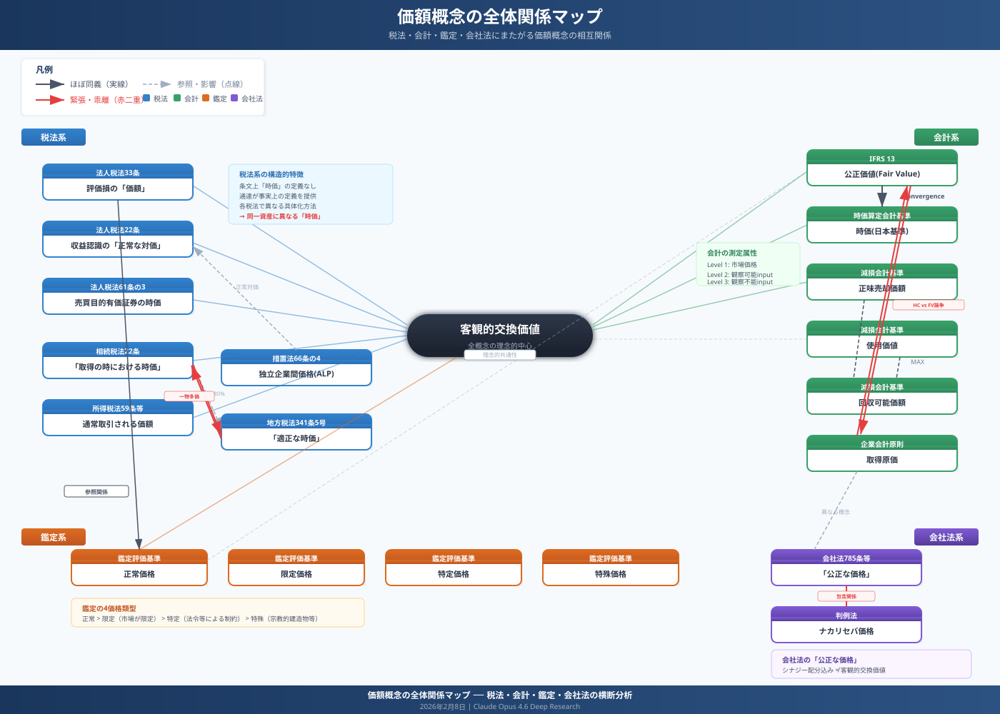
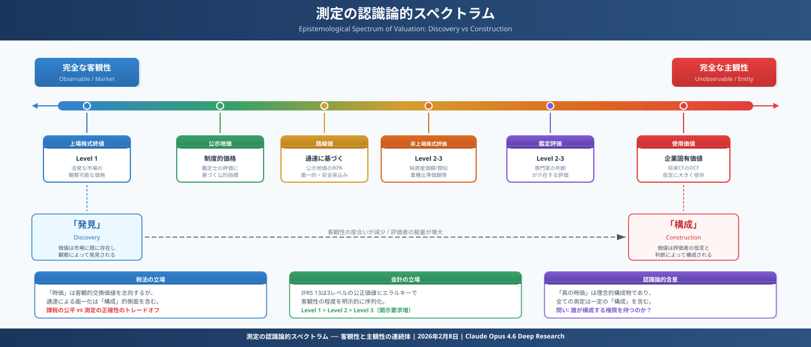
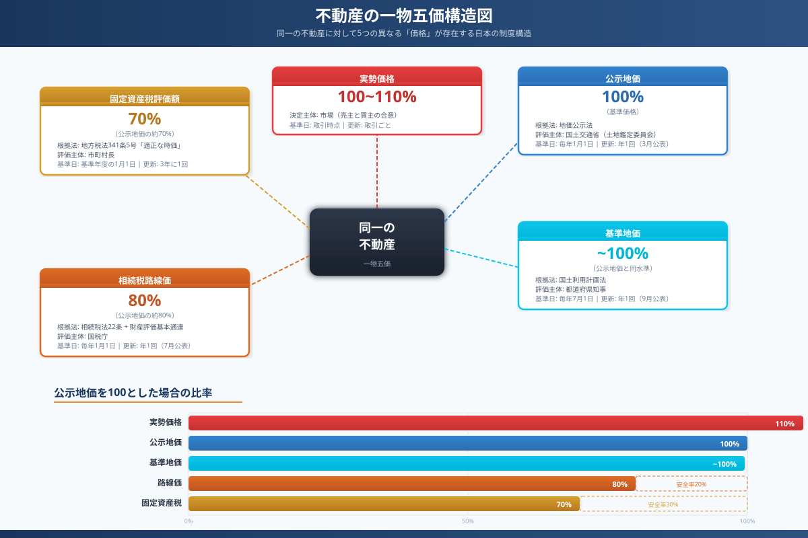

日本法における「価額」「価値」「時価」関連概念の体系的分析
第1章 はじめに ── なぜ「時価」は難しいのか
日本法の世界には、「時価」「公正価値」「適正な価額」「正常価格」「公正な価格」など、資産の経済的価値を表す概念が少なくとも25種類以上存在する。これらは税法、会計基準、不動産鑑定評価基準、会社法のそれぞれの文脈で独自に定義され、時に重なり合い、時に鋭く対立する。
本報告書は、これらの概念を体系的に整理し、以下の問いに答えることを目的とする。
- 各法域における「価額」概念はどのように定義され、相互にどう関係するのか
- 「客観的交換価値」という司法上の統一概念は、実務上どこまで機能しているのか
- 「一物多価」問題の構造的原因は何か、それは解消可能なのか
- 通達による価額の「画一化」は、租税法律主義とどのような緊張関係にあるのか
分析の方法論
本報告書は、以下の3種類の一次資料に基づく。
| 資料類型 | 件数 | データソース |
|---|---|---|
| 裁判例・裁決事例 | 29件 | 判例データベース全文検索（12種類のクエリ） |
| 学術論文・研究報告 | 11本以上 | RAGセマンティック検索、Web学術DB検索 |
| 法令・通達・基準 | 多数 | e-Gov法令検索、国税庁通達データベース |
概念の全体像
まず、本報告書で分析する25の主要概念とその所属法域を一覧で示す。
| 法域 | 概念名 | 根拠規定 | 定義の核心 |
|---|---|---|---|
| 税法 | 時価（法人税法） | 法人税法22条、33条等 | 客観的交換価値＝通常付される価額 |
| 時価（所得税法） | 所得税法59条等 | 同上（みなし譲渡における価額） | |
| 時価（相続税法） | 相続税法22条 | 取得時における客観的交換価値 | |
| 適正な時価 | 地方税法341条5号 | 正常条件下の取引価格 | |
| 適正な価額 | 法人税法22条2項 | 無償取引等の収益認識における時価 | |
| 通常得べき対価の額 | 法人税法22条の2 | 収益認識基準としての時価 | |
| 会計基準 | 公正価値（fair value） | IFRS 13号 | 出口価格（市場参加者間の秩序ある取引） |
| 時価（日本基準） | 企業会計基準30号 | IFRS 13号と同等の定義 | |
| 使用価値 | IAS 36 | 継続使用によるCFの現在価値 | |
| 回収可能価額 | IAS 36、減損会計基準 | 正味売却価額と使用価値の高い方 | |
| 正味売却価額 | IAS 2、棚卸資産基準 | 見積売価−完成・販売コスト | |
| 鑑定評価 | 正常価格 | 不動産鑑定評価基準 | 合理的市場で形成される市場価値 |
| 特定価格 | 同上 | 法令等の社会的要請による特殊価格 | |
| 限定価格 | 同上 | 併合・分割における市場限定価格 | |
| 特殊価格 | 同上 | 市場性のない不動産の経済価値 | |
| 会社法 | 公正な価格 | 会社法785条等 | ナカリセバ価格 or シナジー適正分配価格 |
| 公正な対価 | 会社法784条の2等 | 差止請求における基準 | |
| 公的評価 | 公示価格 | 地価公示法 | 標準地の正常な価格（100%基準） |
| 基準地価格 | 国土利用計画法施行令 | 都道府県基準地の正常価格 | |
| 路線価 | 相続税法・評価通達 | 公示価格の約80% | |
| 固定資産税評価額 | 地方税法 | 公示価格の約70% |

第2章 税法上の「時価」── 客観的交換価値の世界
税法における「時価」は、法人税法・所得税法・相続税法のそれぞれで用いられるが、法律上の明確な定義規定は存在しない。その内容は、もっぱら判例と通達を通じて具体化されてきた。
2.1 法人税法上の「時価」
2.1.1 法人税法22条と「適正な価額」
法人税法22条2項は、法人の各事業年度の所得の金額の計算上益金の額に算入すべき金額として「無償による資産の譲受け」等を掲げるが、その場合の収益の額は「当該事業年度の収益の額」とのみ規定する。ここにいう「収益の額」が時価（適正な価額）によることは、判例・通説上確立している[1]。
法人税法22条2項の趣旨は、法人が資産を他に譲渡した場合には、その譲渡の時における価額（時価）により当該資産の譲渡に係る収益の額を認識すべきものと解するのが相当である。── 最高裁平成7年12月19日判決（南西通商事件）
2.1.2 法人税法33条と評価損の「時価」
法人税法33条は資産の評価損の損金算入について規定する。同条2項は「内国法人の有する資産につき...その資産の評価換えをしてその帳簿価額を減額した場合には、その減額した部分の金額のうち、その資産の当該事業年度終了の時における価額...を基礎として...計算した金額」に達するまでの金額は損金算入を認める。ここにいう「価額」が時価を意味することは通達で明確化されている[2]。
2.1.3 法人税法61条の3と有価証券の時価評価
売買目的有価証券については、法人税法61条の3により事業年度終了時の時価法が強制される。ここにいう「時価」は「事業年度終了の時における有価証券の価額として...算出した金額」であり、上場有価証券については「最終の売買の価格」（終値）とされる（法人税法施行令119条の13）。
2.2 「客観的交換価値」── 司法上の統一定義
税法上の「時価」の解釈について、判例は一貫して「客観的交換価値」という定式を採用してきた。この定式は、特に相続税法の文脈で確立し、法人税法・所得税法にも波及している。
この定式は以下の3つの要素から構成される。
①客観性
主観的な効用価値ではなく、市場における客観的な交換価値。特定の当事者の事情を排除する。
②不特定多数の当事者
特定少数者間の取引ではなく、開かれた市場における取引を前提とする。
③自由な取引
強制・制限のない、合理的判断に基づく自由意思での取引を想定する。
2.3 上場株式の時価 ── 「終値」原則の確立
上場株式の時価については、判例上「終値」を時価とする原則が確立している。以下に主要判例を示す。
外国証券取引所の終値
値幅制限のない外国証券取引所（例：香港証券取引所）であっても、終値が客観的交換価値そのものであるとされた（東京地裁平成28年1月21日判決）。原告は「高値安値の単純平均」を主張したが、裁判所はこれを退けた[5]。
時価の「幅」は認められるか
法人税法上の時価に「幅」を認めるべきかという論点について、裁判所は原則として否定的立場をとる。
上記判例は、原告が移転価格税制における独立企業間価格のレンジを援用して時価の幅を主張したケースであるが、裁判所は「法人税法22条・37条と移転価格税制（租税特別措置法66条の4）は制度が異なる」として、時価の幅を認めなかった。移転価格税制では「独立企業間価格の幅（arm's length range）」が認められるのに対し、法人税法上の一般的な時価は一義的であるとの立場が示された。
2.4 非上場株式の時価 ── 評価通達と「客観的交換価値の体現」
取引相場のない株式の時価評価は、上場株式と異なり「終値」という客観的な指標が存在しないため、評価方法自体が争点となる。
2.5 所得税法上の「時価」
所得税法36条2項は「当該物若しくは権利を取得し、又は当該利益を享受する時における価額」を収入金額とする。この「価額」について、判例は法人税法と同じ「客観的交換価値」の定式を採用している。
2.6 相続税法上の「時価」
相続税法22条は「当該財産の取得の時における時価」と規定する。この「時価」の解釈が最も精緻に発展してきたのが相続税・贈与税の分野である。
評価通達による画一的評価の原則
相続税法22条の「時価」を具体化するために、国税庁長官は財産評価基本通達（昭和39年4月25日付直資56・直審（資）17）を定めている。この通達に基づく画一的評価が「時価」の推認として機能する。
「特別の事情」論
評価通達による画一的評価を覆すには「特別の事情」の存在が必要とされる。この「特別の事情」論は、最高裁平成25年7月12日判決（固定資産税事件）を起源とし、相続税分野にも波及した。
2.7 「時価」は不確定概念か ── 租税法律主義との緊張
金子宏教授は「時価」を租税法上の「不確定概念（unbestimmter Rechtsbegriff）」と位置づけつつ、「法の趣旨・目的に照らしてその意義を明確になしうるもの」であれば許容されるとする[12]。
法の執行に際して具体的事情を考慮し、税負担の公平を図るためには、不確定概念を用いることは、ある程度は不可避であり、また必要でもある。── 金子宏『租税法』（弘文堂）
これに対し、大淵博義教授は、不確定概念による課税は租税法律主義に反するとの批判的立場をとる[13]。この対立は、税法における「時価」概念の根本的な問題を浮き彫りにしている。
| 論者 | 立場 | 根拠 |
|---|---|---|
| 金子宏 | 不確定概念の使用は一定条件下で許容 | 法の趣旨・目的による明確化が可能 |
| 大淵博義 | 不確定概念による課税は租税法律主義違背 | 課税要件明確主義の厳格な解釈 |
| 植田祐美子 | ソフトローとしての通達による具体化 | 不確定概念の通達による補充は実質的に法規範化 |
2.8 低額譲渡と寄附金認定 ── 時価との差額の法的扱い
法人税法37条7項は、寄附金を「金銭その他の資産又は経済的な利益の贈与又は無償の供与」と定義し、「実質的に贈与又は無償の供与と認められる金額」を含むと規定する。低額譲渡（時価より低い価額での譲渡）の場合、時価と実際の取引価額との差額が寄附金と認定される。
低額譲渡の判定構造
| 取引類型 | 時価との関係 | 法的効果 | 関連条文 |
|---|---|---|---|
| 適正価額での譲渡 | 取引価額 ≒ 時価 | 通常の損益認識 | 法22条 |
| 低額譲渡 | 取引価額 < 時価 | 差額が寄附金認定の対象 | 法37条7項 |
| 無償譲渡 | 対価なし（時価全額が問題） | 時価相当額が寄附金 | 法37条7項 |
| 高額譲受け | 取得価額 > 時価 | 差額が寄附金認定の対象 | 法37条8項 |
第三者割当増資と「適正な価額」
この判決は、証券市場における「適正な発行価額」の基準（公正発行価額論）と税法上の「適正な価額」（客観的交換価値）が異なる概念であることを明確にした点で重要である。会社法上の有利発行規制は、既存株主の保護を目的とするのに対し、税法上の時価は適正な課税を目的とする。目的が異なれば、価額の基準も異なりうる。
2.9 法人税法と相続税法の評価方法の差異 ── 非上場株式を例として
同一の非上場株式であっても、法人税法と相続税法では評価方法が異なる場合がある。この差異は、「時価」という同一の概念が、適用される法域によって異なる内容を持つことを示唆する。
| 項目 | 相続税法上の評価（財産評価基本通達） | 法人税法上の評価（法人税基本通達） |
|---|---|---|
| 評価方法の選択 | 会社規模に応じて類似業種比準方式・純資産価額方式を選択 | 財産評価基本通達を準用しつつ、一定の修正を加える |
| 子会社株式の特例 | 通常の評価方法による | 純資産価額方式の併用を修正で要求（通達9-1-14） |
| 「小会社」の評価 | 純資産価額方式が原則 | 同様だが、法人税法独自の修正あり |
| 議決権割合 | 5%以上か否かで「同族株主」判定に影響 | 法人税法独自の基準（取引の態様に応じて判定） |
2.10 「時価」の時間的側面 ── いつの時点の時価か
「時価」はある特定の時点における価額を意味する。その「時点」の確定は、実務上極めて重要である。
| 場面 | 基準時点 | 根拠 |
|---|---|---|
| 法人税法33条の評価損 | 事業年度終了の時 | 法33条2項「当該事業年度終了の時における当該資産の価額」 |
| 相続税の財産評価 | 相続開始の時（＝被相続人の死亡時） | 相続税法22条「当該財産の取得の時における時価」 |
| 贈与税の財産評価 | 贈与の時 | 相続税法22条の準用 |
| 所得税法のみなし譲渡 | 譲渡の時 | 所得税法59条「その時における価額」 |
| 上場株式の終値 | 当該取引日の終値 | 取引日の最終売買価格 |
| 株式買取請求の公正な価格 | 株式買取請求がされた日 | 最高裁平成23年4月19日決定で確立 |
2.11 税法における「時価」の沿革
税法上の時価概念の発展を歴史的に辿ると、以下の3つの段階に分けられる。
第1期：取得原価主義の時代（〜1990年代）
法人税法は原則として取得原価主義に立脚し、「時価」が問題となるのは例外的な場面（無償取引、低額譲渡等）に限られていた。評価損の損金算入も限定的であった。
第2期：時価会計導入期（1990年代後半〜2000年代）
金融ビッグバン（1996年〜）を契機として、金融商品への時価評価が導入された。平成9年度（1997年）税制改正でトレーディング有価証券の時価評価損益の課税所得への反映が定められた（旧措法67条の9）。
わが国で金融商品に時価評価を導入すべきことを最初に明らかにしたのは、平成9年6月の企業会計審議会による「金融商品に係る会計処理基準に関する論点整理」においてである。これは平成8年11月の橋本総理の指示による金融システム改革（日本版ビッグバン）を契機とするものである。 ── 福田吉晴「時価評価を巡る課税上の諸問題について」税大論叢34号
第3期：時価概念の拡大期（2000年代〜現在）
企業組織再編税制（2001年）、連結納税制度（2002年）、グループ法人税制（2010年）の導入に伴い、時価に関する規定が飛躍的に増大した。JICPAが2004年に研究報告第11号を公表したのはこの文脈においてである。
2.12 判例にみる「客観的交換価値」の具体的認定方法
「客観的交換価値」という抽象的概念は、実際の訴訟においてどのように具体化されるのか。以下に、資産類型別の認定方法を判例に基づいて分析する。
2.12.1 上場有価証券の場合
上場有価証券については、証券取引所の終値が客観的交換価値として最も信頼性の高い指標とされる。その根拠は以下の3点に集約される。
| 根拠 | 内容 | 関連判例 |
|---|---|---|
| ①市場の公開性 | 証券取引所は不特定多数の当事者に開かれた市場である | 東京高裁H27.11.18判決 |
| ②価格形成の客観性 | 終値は「自由競争原理によって最終的に形成された」価格である | 東京地裁H28.1.21判決 |
| ③利用の広汎性 | 終値は「一般に時価として広く認識され利用されている」 | 東京地裁H27.10.8判決 |
ただし、以下の場合には終値の修正が議論される。
- 気配値のみの場合：売買が成立せず気配値しか存在しない場合、気配値が客観的交換価値を反映するかが問題となる
- 大量保有の場合：大量の株式を市場で売却すると価格が下落する「マーケット・インパクト」の考慮
- 取引停止中の場合：上場が維持されているが取引が停止されている期間の時価算定
- 上場廃止が予定されている場合：上場廃止予定銘柄の時価
2.12.2 取引相場のない株式の場合
非上場株式については、直接的な市場価格が存在しないため、間接的な方法で客観的交換価値を算定する必要がある。財産評価基本通達は、以下の3つの主要な評価方法を定めている。
| 評価方法 | 内容 | 適用場面 | 理論的根拠 |
|---|---|---|---|
| 類似業種比準方式 | 上場類似企業の株価を基に、配当・利益・純資産の3要素で比準 | 大会社（原則）、中会社（併用） | 市場価格の間接的参照（market approach） |
| 純資産価額方式 | 会社の資産を時価評価し、負債を控除して株式価値を算定 | 小会社（原則）、大会社（選択可） | 解散価値の算定（asset approach） |
| 配当還元方式 | 過去の配当実績を資本化して株式価値を算定 | 少数株主（同族株主以外） | 投資利回りの資本化（income approach） |
上記の3方式は、国際的な企業価値評価の3つのアプローチ（market approach, asset approach, income approach）に対応する。しかし、税法上の評価方法は、これらの国際的なアプローチを完全に反映しているわけではない。例えば、DCF法（discounted cash flow method）は国際的な企業価値評価の主流であるが、日本の評価通達には明示的には採用されていない（ただし、法人税基本通達9-1-13(4)で「国税庁長官の特認」として個別に認められる余地はある）。
2.12.3 不動産の場合
不動産の客観的交換価値の認定は、以下の4つの方法が用いられる。
| 方法 | 内容 | 特徴 | 裁判所の評価 |
|---|---|---|---|
| 路線価方式 | 評価通達に基づく画一的評価 | 簡便だが個別事情を反映しにくい | 「一般的合理性あり」→時価と推認 |
| 不動産鑑定 | 鑑定士による個別評価 | 個別事情を反映するが「幅」がある | 有力な証拠だが唯一の基準ではない |
| 取引事例比較 | 近隣類似不動産の取引事例を参照 | 比較可能な事例の入手に左右される | 事例の適切性が問題 |
| 公示価格割り戻し | 路線価÷0.8＋時点修正 | 路線価を逆算して公示価格水準に修正 | 「合理性を有する」（H25.10.22判決） |
2.12.4 棚卸資産の場合
棚卸資産の時価は、法人税基本通達9-1-1で「当該事業年度終了の時における当該棚卸資産の価額」とされ、具体的には正味売却価額（見積売価から見積追加製造原価及び見積販売直接経費を控除した額）による。
棚卸資産の評価損の損金算入は、施行令68条1項1号に基づき、「当該資産が著しく陳腐化したこと」等の事実が必要である。ここでいう「著しく陳腐化」は、物理的な劣化だけでなく、経済的陳腐化（型式の変更、新製品の発売による旧製品の市場価値の下落等）も含むとされる。
2.12.5 固定資産の場合
固定資産（不動産を含む）の評価損は、施行令68条1項3号に基づき、「当該資産につき物損等の事実が生じたこと」が要件となる。「物損等の事実」には以下が含まれる。
| 事実の類型 | 具体例 | 通達根拠 |
|---|---|---|
| 物理的損傷 | 災害による損壊、火災、水害 | 法基通9-1-16 |
| 機能的陳腐化 | 技術革新による設備の陳腐化、新製品への切替 | 法基通9-1-17 |
| 経済的事情の変化 | 所在地域の経済環境の著しい変化、用途変更による価値低下 | 法基通9-1-18 |
| 法的規制の変更 | 土壌汚染対策法の適用、建築規制の強化 | 個別判断 |
2.13 法人税法における時価の体系的整理
法人税法には、「時価」に関連する規定が多数散在している。以下に体系的に整理する。
| 条文 | 場面 | 「時価」の意義 | 具体的用語 |
|---|---|---|---|
| 法22条2項 | 益金の額の計算 | 無償取引等の収益認識 | 「収益の額」（＝適正な価額と解される） |
| 法22条の2 | 収益認識基準 | 資産の販売等に係る収益 | 「通常得べき対価の額に相当する金額」 |
| 法25条 | 資産の評価益 | 評価益の益金算入 | 「資産の価額」 |
| 法33条 | 資産の評価損 | 評価損の損金算入 | 「当該事業年度終了の時における当該資産の価額」 |
| 法37条 | 寄附金 | 低額譲渡等の認定基準 | 「その時の価額」（法基通9-4-1等で具体化） |
| 法61条の3 | 売買目的有価証券 | 期末時価評価 | 「事業年度終了の時における有価証券の価額」 |
| 法61条の11 | 組織再編に係る資産 | 非適格組織再編の時価移転 | 「時価」 |
| 法62条の8 | 非適格合併等の資産調整 | 資産等超過差額の算定 | 「時価純資産価額」 |
第3章 会計基準における「公正価値」「時価」── 出口価格と使用価値
会計基準における「公正価値」「時価」は、税法上の「時価」と似て非なる概念である。特に2019年のASBJ「時価の算定に関する会計基準」（企業会計基準第30号）の公表以降、会計上の「時価」はIFRS 13号の「公正価値」とほぼ同義となった。
3.1 IFRS 13号の「公正価値」（Fair Value）
IFRS 13号は公正価値を以下のように定義する[14]。
公正価値とは、測定日時点で、市場参加者間の秩序ある取引において、資産を売却するために受け取るであろう価格又は負債を移転するために支払うであろう価格をいう。── IFRS 13号「公正価値測定」第9項
この定義の核心は「出口価格（exit price）」概念にある。すなわち、資産の「売却価格」であって「取得価格」（入口価格）ではない。
公正価値ヒエラルキー（レベル1〜3）
| レベル | インプットの性質 | 具体例 | 客観性 |
|---|---|---|---|
| レベル1 | 活発な市場における同一資産の公表価格 | 上場株式の終値、商品先物の決済価格 | 最高 |
| レベル2 | レベル1以外の直接的・間接的に観察可能なインプット | 類似資産の市場価格、金利・為替レート、信用スプレッド | 高 |
| レベル3 | 観察不能なインプット | DCF法による評価、オプション価格モデル、経営者の見積り | 最低 |
IFRS 13号のレベル1インプット（活発な市場における同一資産の公表価格）は、税法上の上場株式の時価＝終値の原則と実質的に同一である。両者は「市場価格の直接参照」という点で概念的に一致する。しかし、レベル2・3に下がるにつれ、税法上の「客観的交換価値」との乖離が拡大する。
3.2 日本基準の「時価」（企業会計基準第30号）
2019年7月に公表された企業会計基準第30号「時価の算定に関する会計基準」は、IFRS 13号とほぼ同一の定義を採用した[15]。
「時価」とは、算定日において市場参加者間で秩序ある取引が行われると想定した場合の、当該取引における資産の売却によって受け取る価格又は負債の移転のために支払う価格をいう。── 企業会計基準第30号 第5項
3.3 減損会計における「回収可能価額」と「使用価値」
減損会計基準（IAS 36号、日本基準では「固定資産の減損に係る会計基準」）は、税法上の評価損（法人税法33条）と構造的に対応するが、概念の差異は大きい。
| 項目 | 会計基準（減損会計） | 税法（評価損） |
|---|---|---|
| 損失認識の基準 | 回収可能価額 < 帳簿価額 | 法33条2項の「事実」の発生 + 時価 < 帳簿価額 |
| 回収可能価額の構成 | 正味売却価額 or 使用価値の高い方 | 「時価」（客観的交換価値）のみ |
| 使用価値の考慮 | 考慮する（将来CFの現在価値） | 考慮しない（客観的交換価値のみ） |
| 割引計算 | 加重平均資本コスト等で割引 | 割引計算なし |
| 損金算入 | 会計上の費用として認識 | 「損金経理」+ 法令要件を満たす場合のみ |
税法上の評価損における「時価」は客観的交換価値（＝市場で売却した場合の価格）に限定される。一方、減損会計では「使用価値」（資産を継続使用することで得られる将来キャッシュ・フローの現在価値）が回収可能価額の構成要素として認められる。このため、使用価値が正味売却価額を上回る資産について、会計上は減損不要でも、税法上は評価損の計上が求められる（またはその逆の）ケースが生じうる。
3.4 確定決算主義と時価評価の緊張関係
法人税法33条の評価損は「損金経理」を要件とする。これは確定決算主義の一環であり、法人の会計処理と税務処理の連動を前提とする。しかし、IFRS導入や減損会計の発達により、会計上の評価と税法上の評価の乖離が拡大している[16]。
IFRS適用企業とイタリアンGAAP依拠企業の間の税負担の公平のため、損金経理の原則（逆基準性の原則）を廃止した例がある。「会計は会計、税務は税務」の原則への移行が進んでいる。── 藤田敬司「租税回避をめぐる法と会計」

3.5 IFRS 13号の適用指針の詳細
主要市場と最も有利な市場
IFRS 13号は、公正価値の測定にあたり、「主要市場」（principal market）がある場合はその市場の価格を、主要市場がない場合は「最も有利な市場」（most advantageous market）の価格を用いるべきとする（第16項）。この区別は、税法上の「時価」には明示的に存在しない。
| 市場概念 | 定義 | 税法との対応 |
|---|---|---|
| 主要市場 | 当該資産について最大の取引量と活動水準を有する市場 | 明示的対応なし（判例は「不特定多数の当事者間の自由な取引」を前提） |
| 最も有利な市場 | 取引コストや輸送コスト控除後に受取額を最大化する市場 | 税法は取引コストの控除を明示しない |
| 活発な市場 | 資産又は負債についての取引が十分な頻度・量で行われ、価格情報が継続的に入手可能な市場 | 上場市場がこれに該当（終値の利用根拠） |
出口価格 vs 入口価格
IFRS 13号の最も重要な概念的特徴は「出口価格（exit price）」の採用である。これは、資産を「売却する」際の価格であり、資産を「取得する」際の価格（入口価格、entry price）ではない。
出口価格（Exit Price）
- 「売る」際の価格
- 市場参加者の視点
- IFRS 13号が採用
- 税法の「客観的交換価値」にほぼ対応
- 取引コスト（仲介手数料等）は含めない
入口価格（Entry Price）
- 「買う」際の価格
- 取得者の視点
- 取得原価主義が採用
- 法人税法の帳簿価額の基礎
- 取得に要した費用を含む
出口価格と入口価格は、完全な市場では一致するが、現実の市場ではビッド・アスク・スプレッド（買値と売値の差）が存在するため、両者は一般的に一致しない。この点は、「時価＝客観的交換価値」を「売却価額」として理解すべきか「取得価額」として理解すべきかという論点に関わる。
3.6 減損会計の詳細構造と税法との対比
減損の兆候と評価損の事実
減損会計と税法上の評価損は、いずれも「資産の価値が下落した場合の損失認識」を扱うが、そのトリガー（発動要件）と測定方法が異なる。
| 段階 | 減損会計（IAS 36 / 日本基準） | 税法上の評価損（法33条） |
|---|---|---|
| ①トリガー | 減損の兆候: 市場価格の著しい下落、資産の物理的損傷、経営環境の著しい悪化、資産からのキャッシュ・フローの実績が予測を下回る等 | 法令で定める事実: 物損等の事実（施行令68条1項各号）、法的整理の事実（同条2項） |
| ②判定 | 減損損失の認識テスト: 割引前将来キャッシュ・フロー < 帳簿価額 → 認識 | 時価 < 帳簿価額（比較のみ、将来CFテストなし） |
| ③測定 | 回収可能価額 = max(正味売却価額, 使用価値) まで減額 | 時価（客観的交換価値）まで減額 |
| ④戻入れ | IAS 36: 戻入れ可能 / 日本基準: 戻入れ禁止 | 戻入れなし（評価損は確定的） |
「使用価値」の具体的計算
IAS 36号における使用価値は以下のように計算される：
使用価値 ＝ Σ（将来キャッシュ・フローt ÷ (1+r)t）
r = 割引率（税引前の加重平均資本コスト等）、t = 各期間
将来キャッシュ・フローには、資産の継続的使用から生じるCFと、耐用年数終了時の処分から生じるCFを含む。
この「使用価値」の概念は、税法上の「時価」（客観的交換価値＝売却価額）には包含されない。そのため、使用価値 > 正味売却価額の資産（例：特殊な生産設備、立地に依存する不動産等）について、会計上は減損不要（回収可能価額 > 帳簿価額）であっても、税法上は時価（＝正味売却価額に近い概念）が帳簿価額を下回れば評価損の計上が理論的には可能となる（ただし「法令で定める事実」の要件を満たす必要がある）。
3.7 金融商品の時価評価 ── 会計と税法の接点
| 金融商品区分 | 会計上の処理 | 税法上の処理 | 差異の有無 |
|---|---|---|---|
| 売買目的有価証券（トレーディング） | 毎期時価評価、評価差額はP/L | 毎期時価評価、評価損益は益金/損金（法61条の3） | ほぼ一致 |
| その他有価証券 | 毎期時価評価、評価差額はOCI | 取得原価（時価評価しない） | 大きな差異 |
| 満期保有目的債券 | 償却原価法 | 償却原価法 | 一致 |
| 子会社・関連会社株式 | 取得原価（減損テストあり） | 取得原価（評価損は限定的に損金算入可能） | 部分的差異 |
| デリバティブ | 毎期時価評価 | ヘッジ取引等の特例あり | 部分的差異 |
一部について取得原価主義、一部について時価主義という現行制度がどこまでもつのかという問題がある。デリバティブ取引は、オフバランスであるが故に資産の存在しないところに収益が生じ、伝統的な資産と収益の関係を前提として構築されてきた課税制度がくずれる。 ── 中里実「税制改革の背景」税大論叢40周年記念論文
3.8 公正価値会計の歴史的変遷
公正価値（fair value）概念の発展を歴史的に辿ることで、現在の概念の位置づけをより深く理解できる。
| 年 | 出来事 | 意義 |
|---|---|---|
| 1993年 | SFAS 115号（米国）公表 | 有価証券の3分類（売買目的・満期保有・売却可能）と時価評価の導入 |
| 1996年 | 日本版ビッグバン開始 | 橋本首相の指示による金融システム改革 |
| 1997年 | 企業会計審議会「金融商品に係る会計処理基準に関する論点整理」 | 日本で金融商品の時価評価導入を初めて明確化 |
| 1999年 | 企業会計審議会「金融商品に係る会計基準」公表 | 日本における金融商品の時価評価の本格的導入 |
| 2000年 | IAS 39号改訂 | 金融商品の認識・測定基準の国際的統一へ |
| 2006年 | SFAS 157号（米国）公表 | 公正価値の定義を「出口価格」として初めて明確化、3レベルのヒエラルキーを導入 |
| 2008年 | リーマンショック | 公正価値会計に対する批判の高まり（時価評価がプロシクリカリティを助長するとの指摘） |
| 2011年 | IFRS 13号公表 | SFAS 157号をベースに国際基準として公正価値測定を統一 |
| 2019年 | 企業会計基準第30号（日本）公表 | IFRS 13号とほぼ同等の時価定義を日本基準に導入 |
| 2021年 | 企業会計基準第30号の適用開始 | 日本の会計実務における「時価＝出口価格」の定着 |
リーマンショックと公正価値会計批判
2008年のリーマンショックは、公正価値会計に対する根本的な批判を引き起こした。主な批判は以下の通りである。
公正価値会計への批判
- プロシクリカリティ（順循環性）：資産価格の下落→評価損計上→自己資本毀損→投げ売り→さらなる価格下落という悪循環
- 市場の非効率性：パニック時の市場価格は「公正」とは言えない
- 流動性の枯渇：取引が成立しない場合の「時価」をどう算定するか
- レベル3評価の恣意性：観察不能なインプットに基づく評価は「mark to myth」
公正価値会計の擁護論
- 透明性の確保：取得原価では資産の実態を隠蔽する
- 早期警告機能：時価評価により問題を早期に可視化
- 比較可能性：異なる時点で取得した資産を同一基準で比較
- 問題は会計基準ではなく規制：自己資本規制の設計こそ改善すべき
この論争は、税法上の時価概念にも間接的に影響を及ぼしている。特に、市場が機能不全に陥った場合の「客観的交換価値」の認定方法という問題は、リーマンショック後の評価損訴訟でも争点となりうる。
3.9 減損会計と評価損の具体的事例比較
以下に、同一の資産について会計上の減損処理と税法上の評価損処理がどのように異なるかを、具体的な数値例で示す。
事例1：工場用地（時価下落ケース）
| 項目 | 金額 |
|---|---|
| 帳簿価額（取得原価） | 10億円 |
| 正味売却価額（不動産鑑定評価額 − 処分費用） | 6億円 |
| 使用価値（将来CF現在価値：年間1.5億円×20年、割引率5%） | 18.7億円 |
会計処理（減損会計）
回収可能価額 = max(6億, 18.7億) = 18.7億円
回収可能価額（18.7億）> 帳簿価額（10億）
→ 減損損失なし（使用価値が帳簿価額を上回る）
税務処理（評価損）
時価（客観的交換価値）≒ 正味売却価額 = 6億円
時価（6億）< 帳簿価額（10億）
→ 4億円の評価損が理論的に計上可能（ただし「物損等の事実」等の要件を満たす必要あり）
この事例は、「使用価値」を考慮するかどうかで4億円の差が生じるケースである。会計上は「使い続ければ元が取れる」ため減損不要だが、税法上は「売れば6億にしかならない」ため帳簿価額との差額が評価損の候補となる。
事例2：その他有価証券（株価下落ケース）
| 項目 | 金額 |
|---|---|
| 取得原価 | 100億円 |
| 期末時価（株式市場の終値） | 40億円（60%下落） |
会計処理
その他有価証券の時価評価：
50%以上の下落 → 減損処理（60億円の評価損をP/L計上）
（日本基準では概ね50%以上の下落で「著しい下落」と判定されることが多い）
税務処理
上場有価証券の評価損（法基通9-1-7等）：
期末時価が帳簿価額の50%以上下落 + 回復の見込みがない → 評価損60億円が損金算入可能
（法33条2項、施行令68条1項2号）
この事例では、会計と税法がほぼ同じ結論に至る。上場有価証券の大幅な時価下落という「分かりやすい」ケースでは、両者の差異は小さい。差異が顕在化するのは、使用価値が問題となる固定資産や、時価の算定自体が困難な非上場株式のケースである。
3.10 のれんの評価と「公正価値」
のれん（goodwill）の評価は、公正価値概念が最も困難に直面する場面の一つである。
| 基準 | のれんの減損テスト | 頻度 | 「時価」の関与 |
|---|---|---|---|
| IFRS（IAS 36） | 減損テスト（回収可能価額 vs 帳簿価額） | 毎年（減損の兆候の有無にかかわらず） | 使用価値or公正価値のいずれか高い方 |
| 日本基準 | のれんは規則的償却（最長20年） | 減損の兆候がある場合のみ | 回収可能価額（減損テスト時のみ） |
| 法人税法 | 資産調整勘定として5年均等償却 | 該当なし（規則的償却のみ） | 取得時の「時価純資産価額」との差額で算定 |
第4章 不動産鑑定評価基準の「正常価格」── 鑑定人の専門的判断
不動産鑑定評価基準は、不動産の経済価値を表す価格について4つの類型を定めている。これらは税法上の「時価」や会計上の「公正価値」とは異なる体系的文脈に位置づけられる。
4.1 正常価格 ── 「客観的交換価値と実質的に同じ」
正常価格とは、市場性を有する不動産について、現実の社会経済情勢の下で合理的と考えられる条件を満たす市場で形成されるであろう市場価値を表示する適正な価格をいう。── 不動産鑑定評価基準 総論第5章第3節
正常価格と税法上の時価の関係について、判例は両者の概念的同一性を認めている。
4.2 特定価格・限定価格・特殊価格
| 価格類型 | 定義 | 適用場面 | 正常価格との関係 |
|---|---|---|---|
| 特定価格 | 法令等による社会的要請を背景に、正常価格の前提を満たさない場合の価格 | 会社更生法・民事再生法に基づく評価、減損損失に係る鑑定評価 | 正常価格の前提条件を緩和 |
| 限定価格 | 併合・分割等に基づき、正常価格と異なる市場限定下の価格 | 隣接地の併合、借地権と底地の同時売却 | 特定の取引形態を前提に限定 |
| 特殊価格 | 市場性のない不動産の経済価値 | 文化財、宗教建築物、公共施設 | 市場取引の前提自体が不在 |
4.3 鑑定評価の3手法と税法上の時価認定
不動産鑑定評価基準は、原価法、取引事例比較法、収益還元法の3手法を定めている。判例では、これらの手法に基づく鑑定評価額が税法上の時価認定の証拠として位置づけられる。
鑑定評価額の「幅」
法人税法上の上場株式の時価には「幅」を認めない（§2.3参照）一方、不動産鑑定評価額には「一定の幅がある」ことを認める。この矛盾は、資産の性質（上場株式＝流動性が高く価格が一義的 vs 不動産＝個別性が高く価格に幅がある）に起因するが、理論的には「客観的交換価値」という統一概念の限界を示唆している。
4.4 特殊な不動産の「正常価格」── 底地・借地権の評価
底地（借地権が設定された土地）の客観的交換価値は、通常の更地とは異なる方法で把握される。以下の判例は、底地の特殊性に即した時価認定の方法論を示す。
この判決は、底地という特殊な財産の「客観的交換価値」を、以下の2つの経済的利益の合計として構成する画期的な判示を行った。
| 構成要素 | 内容 | 評価方法 |
|---|---|---|
| (1) 地代収入の経済的利益 | 借地契約が継続する間の地代収入の現在価値 | 収益還元法に類似 |
| (2) 復帰価値 | 将来、借地契約終了時に更地として復帰する際の経済的利益の現在価値 | 割引現在価値法 |
注目すべきは、この認定方法が会計基準における「使用価値」の計算に類似している点である。すなわち、将来のキャッシュ・フロー（地代収入）とターミナル・バリュー（復帰価値）を現在価値に割り引くというDCF的発想が、「客観的交換価値」の認定にも導入されている。これは、「客観的交換価値」と「使用価値」の境界が、少なくとも収益用不動産については曖昧であることを示唆する。
4.5 家屋の「使用価値」と「最小使用価値」
この判決は、以下の2つの重要な概念的区別を明示した。
減価償却の残存価額
- 会計・税法上の概念
- 「投資された経費の回収」という機能
- 取得原価を基礎とする計算上の値
- 帳簿上の価額にすぎない
家屋の使用価値（最小使用価値）
- 経済的実態を反映する概念
- 建物が「使用に耐える」限り維持される価値
- ほとんど減価しない一定状態の価値
- 客観的交換価値とは異質の概念
4.6 鑑定評価の3手法の比較
| 手法 | 原理 | 適用対象 | 長所 | 短所 |
|---|---|---|---|---|
| 原価法 | 対象不動産の再調達原価から減価修正 | 建物、新規造成地 | 客観的な費用データに基づく | 市場の需給を直接反映しない |
| 取引事例比較法 | 類似不動産の取引事例を比較修正 | 住宅地、マンション | 市場の実態を直接反映 | 適切な事例の入手に依存 |
| 収益還元法 | 不動産が将来生む収益の現在価値 | 賃貸ビル、商業施設 | 投資判断に適合 | 収益予測の不確実性 |
第5章 会社法における「公正な価格」── シナジーの適正分配
会社法における「公正な価格」（785条等）は、税法上の「時価」とは根本的に異なる概念である。税法上の時価が「静的な客観的交換価値」であるのに対し、会社法上の公正な価格は「動的なシナジーの分配」を含む。
5.1 旧商法から会社法への変遷
旧商法では、株式買取請求権の買取価格は「決議ナカリセバ其ノ有スベカリシ公正ナル価格」と定められていた。平成18年施行の会社法はこれを「公正な価格」に改め、シナジーの適正分配機能を付加した[20]。
5.2 「公正な価格」の二元構造
| 場合 | 「公正な価格」の内容 | 算定方法 |
|---|---|---|
| 企業価値が毀損する場合 | ナカリセバ価格（組織再編がなければ有していたであろう価格） | 株主総会決議直前の市場株価等 |
| 企業価値が増加する場合 | シナジー適正分配価格（公正な組織再編比率に基づく価格） | 公正な株式移転比率を前提とした算定 |
5.3 税法上の「時価」との根本的差異
税法上の「時価」
- 客観的交換価値（静的概念）
- 不特定多数の当事者間の自由な取引を前提
- シナジーの分配は考慮しない
- 「いくらで売れるか」が基準
会社法上の「公正な価格」
- ナカリセバ価格 + シナジー分配（動的概念）
- 特定の組織再編行為を前提
- シナジーの適正分配を含む
- 「株主がいくら受け取るべきか」が基準
5.4 レックス・ホールディングス事件とMBOにおける「公正な価格」
MBO（マネジメント・バイアウト）における少数株主のスクイーズアウトでは、「公正な価格」の算定が特に問題となる[22]。
公正な価格は、①MBOが行われなかったならば株主が享受し得る価値と、②MBOの実施によって増大が期待される価値のうち株主が享受してしかるべき部分とを、合算して算定すべきものとされる。シナジー効果の発現は関係当事者の貢献度に応じて配分すべきであり、これを価格決定に際してどう織り込むかについては、裁判所の裁量に委ねられる。── レックス・ホールディングス事件 最高裁補足意見
5.5 株式移転比率の公正性 ── 手続的保障論
テクモ事件の最高裁決定は、株式移転比率の公正性について「手続的保障論」を採用した。すなわち、比率の実体的な公正さを個別に検証するのではなく、公正な手続が履践されたかどうかで公正性を推認するアプローチである。
相互に特別の資本関係がない会社間において、株主の判断の基礎となる情報が適切に開示された上で適法に株主総会で承認されるなど一般に公正と認められる手続により株式移転の効力が発生した場合には、当該株主総会における株主の合理的な判断が妨げられたと認めるに足りる特段の事情がない限り、当該株式移転における株式移転比率は公正なものとみるのが相当である。 ── 最高裁平成24年2月29日決定（テクモ事件）
この手続的保障論は、税法上の「通達による画一的評価→特別の事情がない限り時価と推認」という枠組みと構造的に類似している。いずれも、手続の合理性から実体の正当性を推認するという法的技法を用いている。
| 法域 | 推認の基礎 | 推認の内容 | 覆す要件 |
|---|---|---|---|
| 相続税法（評価通達） | 通達の「一般的合理性」 | 通達評価額＝時価 | 「特別の事情」の存在 |
| 会社法（テクモ基準） | 「公正な手続」の履践 | 株式移転比率＝公正 | 「特段の事情」の存在 |
5.6 価格決定申立事件の手続と実務
株式買取請求権を行使した株主と会社の間で価格合意に至らない場合、裁判所に価格決定の申立てをすることができる（会社法786条2項等）。この手続では、以下の事項が争点となる。
| 争点 | 内容 | 判断基準 |
|---|---|---|
| 基準日 | いつの時点の価格を評価するか | 株式買取請求がされた日（最判H23.4.19で確立） |
| ナカリセバ価格の算定 | 組織再編がなければ有していた価格 | 株主総会決議直前の市場株価等 |
| シナジーの存否 | 企業価値の増加が生じたか | 組織再編の目的・効果の分析 |
| シナジーの分配 | シナジーをどう分配するか | 裁判所の裁量（貢献度に応じた配分） |
| 参照株価の期間 | 市場株価を何期間で平均するか | 1ヶ月〜6ヶ月の平均（判例により異なる） |
5.7 「公正な対価」と差止請求
会社法784条の2は、吸収合併等が「法令又は定款に違反する場合」に株主が差止請求をできることを規定する。ここで「公正な対価」が問題となるが、これは785条の「公正な価格」とは文脈が異なる。差止請求は事前の救済手段であり、株式買取請求は事後の救済手段である。
事前救済：差止請求（784条の2）
- 組織再編行為の「前」に行使
- 「法令又は定款違反」が要件
- 対価の「公正さ」は法令違反の判断要素
- 組織再編自体を阻止する効果
事後救済：株式買取請求（785条）
- 組織再編行為に「反対」した後に行使
- 「公正な価格」での買取を請求
- 価格の公正さが直接の争点
- 組織再編は実行されるが、対価が調整される
第6章 一物多価問題 ── 同一資産に複数の「時価」が並立する構造
日本の不動産は、同一物件について最大5つの公的な「価格」が付与される。いわゆる「一物四価」（近年は「一物五価」とも）問題は、「時価」概念の多義性を最も端的に示す現象である。

6.1 5つの公的価格とその水準
| 価格名称 | 根拠法令 | 決定主体 | 公示価格比 | 目的 | 基準日 |
|---|---|---|---|---|---|
| 公示価格 | 地価公示法 | 国土交通省土地鑑定委員会 | 100% | 一般の土地取引の指標 | 毎年1月1日 |
| 基準地価格 | 国土利用計画法施行令 | 都道府県知事 | 100% | 公示価格の補完 | 毎年7月1日 |
| 路線価 | 相続税法・評価通達 | 国税庁（国税局長） | 約80% | 相続税・贈与税の課税標準 | 毎年1月1日 |
| 固定資産税評価額 | 地方税法 | 市町村長 | 約70% | 固定資産税の課税標準 | 3年ごと（基準年度1月1日） |
| 実勢価格 | （なし） | 市場 | 変動 | 実際の売買価格 | 取引時点 |
6.2 路線価と時価の関係 ── 判例の分析
路線価の0.8割り戻しの合理性
6.3 固定資産税評価額と「適正な時価」
6.4 一物多価の理論的問題
完全競争市場であれば「一物一価」だが、現実の経済財の取引市場は多くが不完全競争市場であり、同一の経済財であっても同時に複数の市場と複数の価格が存在する。── 浅井光政「租税法上の時価を巡る諸問題」税大論叢36号
品川芳宣教授は、各税の性格に応じた調整措置を講ずる代わりに一物多価を是認することは「簡便であればよいというだけでは、根拠が薄弱である」と批判する[27]。しかし現実の制度は、安全弁（80%、70%の安全率）を組み込むことで一物多価を事実上制度化している。
6.5 数値例による一物多価の実態
以下は、仮想的な土地（東京都区部の住宅地、面積100㎡）について、各公的評価額を示した数値例である。
| 評価基準 | ㎡単価 | 総額（100㎡） | 公示価格比 | 備考 |
|---|---|---|---|---|
| 公示価格（地価公示） | 500,000円 | 50,000,000円 | 100% | 毎年1月1日時点、国土交通省発表 |
| 基準地価格（都道府県調査） | 510,000円 | 51,000,000円 | 102% | 毎年7月1日時点（半年のズレ） |
| 路線価（相続税） | 400,000円 | 40,000,000円 | 80% | 公示価格の約80% |
| 固定資産税評価額 | 350,000円 | 35,000,000円 | 70% | 公示価格の約70%、3年据置 |
| 実勢価格（市場取引） | 480,000〜550,000円 | 48,000,000〜55,000,000円 | 96%〜110% | 個別取引事情により変動 |
この数値例からわかるように、同一の土地について、最大で約57%の価格差（固定資産税評価額3,500万円 vs 実勢価格上限5,500万円）が生じうる。これは「客観的交換価値」が一義的であるとする判例の立場と明白に矛盾する。
各評価額が異なる理由
路線価（80%）の理由
路線価が公示価格の80%に設定されるのは、「評価上の安全性への配慮」（東京地裁H28.7.15判決）による。地価変動リスクを吸収し、相続税評価額が実勢価格を上回ることを防止するバッファーとしての機能がある。これは、相続税の評価時点（死亡時）と納税時点のタイムラグ、および地価下落リスクを考慮したものである。
固定資産税評価額（70%）の理由
固定資産税評価額が公示価格の70%に設定されるのは、①3年に1度の評価替えによるタイムラグの吸収、②大量一括評価による個別精度の限界の吸収、③納税者保護（過大評価の回避）の3つの理由による。固定資産税は毎年課税されるため、過大評価の影響が累積的に作用することから、より大きな安全率が設定されている。
6.6 一物多価問題の理論的射程
一物多価問題は、単なる「数字のズレ」にとどまらず、「時価とは何か」という根本的な問いに関わる。以下の2つの理論的立場が対立する。
立場A：時価は一義的（品川説）
- 客観的交換価値は「正解」が一つ存在する
- 一物多価は制度的便宜であり、本来は統一すべき
- 路線価の80%水準は「近似」にすぎない
- すべての税法で同一の「真の時価」を用いるべき
立場B：時価は本質的に「幅」がある（浅井説）
- 不完全市場では時価は本質的に一義的でない
- 一物多価は現実の反映であり、不可避
- 各税の目的に応じた「時価」の解釈は正当
- 安全率の設定は合理的な制度設計
判例は、「客観的交換価値は必ずしも一義的に確定されるものではない」（東京地裁R2.10.1判決）としつつ、通達による画一的評価を「時価の推認」として認めている。これは、理論的には立場Bに近い認識を前提としつつ、実務的には通達という制度的装置によって「時価の一義性」を擬制している、と整理できる。
第7章 通達による時価の画一化 ── 行政規則の事実上の法規範化
税法上の「時価」は法律の条文には明確に定義されていないが、実務上は通達（財産評価基本通達、法人税基本通達等）によって具体化されている。通達は法律でも政令でもなく、行政機関内部の「事務処理の便宜のための指針」にすぎないが、事実上の法規範として機能している。
7.1 通達による「画一的評価」の正当化論理
判例は、通達による画一的評価を以下の論理で正当化する。
正当化の根拠
- 客観的交換価値は「必ずしも一義的に確定されない」
- 個別評価では納税者間で異なる評価額が生じる
- 画一的評価は納税者間の公平を確保する
- 通達に「一般的な合理性」がある限り、時価と推認される
限界と例外
- 「特別の事情」がある場合は通達によらない評価を認める
- 通達の評価額が「著しく不適当」な場合は例外
- 通達はあくまで行政内部の指針であり法的拘束力はない
- 裁判所は通達に拘束されない
7.2 法人税基本通達における時価の具体化
| 通達番号 | 対象 | 時価の定義・算定方法 |
|---|---|---|
| 9-1-1〜9-1-2 | 棚卸資産 | 「その事業年度終了の時における当該棚卸資産の価額」を時価とし、正味売却価額による |
| 9-1-3〜9-1-7 | 有価証券（上場） | 「課税時期の最終価格」（終値） |
| 9-1-8〜9-1-15 | 有価証券（非上場） | 類似業種比準方式、純資産価額方式等 |
| 9-1-16〜9-1-18 | 固定資産 | 「その資産が使用収益されるものとしてその時において譲渡される場合に通常付される価額」 |
7.3 「通達課税」への批判
法の執行に際して具体的事情を考慮し、税負担の公平を図るためには、不確定概念を用いることは、ある程度は不可避であり、また必要でもある。しかし、通達による時価の具体化は、行政権による事実上の立法に等しく、租税法律主義との緊張関係を孕む。── 植田祐美子「租税法の解釈・適用に係るソフトローの対象領域と今後の課題」
通達による時価の画一化は、以下の二律背反を内包している。
| メリット（画一化の利点） | デメリット（画一化の弊害） |
|---|---|
| 納税者間の公平の確保 | 個別事情の無視 |
| 課税の予測可能性の向上 | 真の時価との乖離 |
| 執行コストの削減 | 租税法律主義との緊張 |
| 税務行政の統一性 | 行政裁量の肥大化 |
7.4 評価通達と6項（総則6項）── 「伝家の宝刀」の問題
財産評価基本通達6項（いわゆる「総則6項」）は、「この通達の定めによって評価することが著しく不適当と認められる財産の価額は、国税庁長官の指示を受けて評価する」と規定する。これは、通達による画一的評価が「著しく不適当」な場合に、個別的な時価評価を行うための「安全弁」として機能する。
総則6項は、①納税者保護（通達評価が時価を上回る場合の救済手段）と、②租税回避の防止（通達評価が時価を著しく下回るスキームの否認手段）の二面的機能を持つ。近年は②の機能が注目されており、タワーマンション節税スキームに対する総則6項の適用が最高裁令和4年4月19日判決で争われた。
最高裁令和4年4月19日判決（タワーマンション事件）
この判決は、相続開始直前に購入したタワーマンションの相続税評価額（路線価方式）が購入価額の約4分の1に過ぎなかったケースで、評価通達6項の適用を認めた。これは、通達による画一的評価の「限界事例」として、一物多価問題の制度的射程を示す重要判例である。
7.5 法人税基本通達の法的性質
法人税基本通達（特に9-1-3以下の評価損関連規定）は、財産評価基本通達とは法的性質が異なる。
| 項目 | 財産評価基本通達 | 法人税基本通達 |
|---|---|---|
| 対象税目 | 相続税・贈与税 | 法人税 |
| 法的性質 | 行政内部の事務処理指針 | 行政内部の事務処理指針 |
| 「時価」の具体化 | 極めて詳細（資産類型ごとの評価方法を網羅） | 相対的に簡略（大枠のみ） |
| 裁判所の扱い | 「一般的合理性」があれば時価と「推認」 | 合理性があれば参考にするが、拘束力は否定 |
| 安全弁 | 総則6項（個別指示による評価） | なし（個別判断に委ねる） |
7.6 国際比較 ── 通達による画一的評価は日本特有か
通達による時価の画一的評価は、日本の税制に特有の現象とは言い切れないが、その網羅性と精緻さは国際的にも際立っている。
| 国 | 相続税における不動産評価 | 特徴 |
|---|---|---|
| 日本 | 路線価方式（公示価格の80%） | 通達による極めて詳細な画一的評価 |
| 米国 | 公正市場価値（Fair Market Value） | IRC§2031に基づく個別評価が原則（鑑定評価の活用） |
| 英国 | 公開市場価値（Open Market Value） | HMRC指針に基づくが、個別評価の余地が大きい |
| ドイツ | 共通価値（Gemeiner Wert） | 評価法（BewG）に基づく画一的評価（日本に近い） |
7.7 評価通達総則6項の適用事例の分析
財産評価基本通達6項（総則6項）は、通達による画一的評価を「例外的に」排除する規定であるが、近年その適用範囲が拡大しつつある。以下に主要な適用類型を整理する。
| 適用類型 | 概要 | 代表的事案 | 裁判所の判断 |
|---|---|---|---|
| ①タワーマンション節税 | 相続直前に高額タワーマンションを購入し、路線価評価額と実勢価格の乖離を利用 | 最高裁R4.4.19判決 | 総則6項適用を認容。「著しく不適当」と認定。 |
| ②借入金による不動産購入 | 相続直前に借入金で不動産を購入し、債務控除と低額評価の二重効果を享受 | 複数の地裁・高裁判決 | 「租税負担の公平に反する」として否認の傾向 |
| ③同族会社の株式評価 | 同族会社の資産構成を操作して類似業種比準方式の適用を有利に導く | 審判所裁決例あり | 事例により判断が分かれる |
最高裁令和4年4月19日判決の射程
いわゆるタワマン節税に関する最高裁判決は、以下の判断枠組みを示した。
- 評価通達の定める方法による評価が「合理的な理由がない」場合は、他の合理的な方法で評価できる（総則6項の適用）
- 合理的な理由の有無は、評価通達の評価額と「実勢価額」の乖離の程度、当該不動産の取得・保有の経緯、取得の態様等を総合考慮して判断する
- 本件では、相続開始前の近接した時期に購入した不動産について、通達評価額が鑑定評価額の約4分の1にとどまることは「著しく不適当」である
この判決は、通達による画一的評価の原則を維持しつつ、「著しい乖離」がある場合の例外を明確化した。しかし、「著しい乖離」の閾値は明示されておらず、今後の判例の蓄積が待たれる。
7.8 法人税法における通達と時価の関係 ── 相続税との違い
相続税法においては、財産評価基本通達が極めて詳細な評価方法を定めており、通達＝時価の「推認」という枠組みが確立している。これに対し、法人税法における通達（法人税基本通達）の位置づけは、やや異なる。
相続税法の場合
- 通達評価額＝時価と推認
- 「特別の事情」がなければ覆らない
- 通達の網羅性が極めて高い
- 立証責任：納税者が「特別の事情」を立証
- 総則6項による安全弁あり
法人税法の場合
- 通達は時価認定の参考指針
- 通達に「一般的合理性」があれば参照
- 通達の規定は相対的に簡略
- 立証責任：状況に応じて柔軟（課税庁側が負うケースも）
- 6項に相当する規定なし
7.9 通達による時価の「制度化」と租税法律主義
通達による時価の画一化は、租税法律主義との関係で以下の3つの論点を提起する。
論点1：課税要件法定主義との関係
租税法律主義の核心である課税要件法定主義は、課税要件のすべてを法律（ないし法律の委任に基づく政令・省令）で定めることを要求する。通達は法律ではなく、行政機関内部の事務処理指針にすぎない。しかし、実質的に通達が「時価」の内容を決定している以上、通達による課税は課税要件法定主義に抵触する余地がある。
論点2：課税要件明確主義との関係
「時価」という不確定概念の使用が課税要件明確主義に反するかどうかは、金子宏教授と大淵博義教授の対立にみられるように、見解が分かれている。通達は、この不確定概念を「明確化」する機能を持つが、通達自体が法律でない以上、通達による明確化は法的に不十分であるとの批判もありうる。
論点3：合法性の原則との関係
合法性の原則は、課税庁は法律に基づいて課税しなければならないという原則である。通達に基づく課税が「法律に基づく」課税と言えるかは議論がある。判例は、通達に「一般的合理性」がある場合には通達に基づく課税を認めているが、これは通達自体の法規範性を認めたものではなく、通達が法律の趣旨に合致する解釈指針として機能していることを認めたものと理解されている。
通達による時価の具体化は、行政権による事実上の立法に等しい面がある。しかし、時価の個別認定を全面的に裁判所に委ねることは、税務行政の実務上不可能であり、通達による一定の画一化は避けられない。問題は、通達が法律の趣旨・目的から逸脱していないかを、裁判所が実質的に審査できるかどうかである。 ── 金子宏『租税法』を参考に構成
第8章 学術的議論 ── 主要な対立軸の整理
「時価」「客観的交換価値」をめぐる学術的議論は多岐にわたる。本章では、主要な対立軸を5つに整理し、それぞれの論者の主張を紹介する。
8.1 時価の一義性 vs 多義性（浅井 vs 品川）
浅井光政の立場：一物多価は不可避
時価主義による測定評価は、仮定的事実関係に基づく予測であるため、確定性と検証可能性の面で難点を有しており、合理的予測方法に多様性が存在する限り、評価金額は不確定的で幅の生ずる余地がある。── 浅井光政「租税法上の時価を巡る諸問題」税大論叢36号
品川芳宣の立場：一物多価は根拠薄弱
それぞれの租税の性格に応じた調整措置を講ずる代わりに「一物多価」を是認することは、「簡便であればよいというだけでは、根拠が薄弱である」[29]。統一的な時価概念を構築すべきとの立場。
8.2 時価主義 vs 実現主義（中里 vs 浅妻）
中里実の問題提起
一部について取得原価主義、一部について時価主義という現行制度がどこまでもつのか...デリバティブ取引は、オフバランスであるが故に資産の存在しないところに収益が生じ、伝統的な資産と収益の関係を前提として構築されてきた課税制度がくずれる。── 中里実「税制改革の背景」税大論叢40周年記念論文
浅妻章如の批判
政策論において時価主義課税は無理であるとされる。他方、国際租税政策論に関しては毎年親会社居住地国で課税すれば良いということが真面目に議論されている。国内課税問題で時価主義は無理とされながら、国際課税問題において時価主義に近づけることが可能であることを前提とするかのような議論の運びに、違和感が残る。── 浅妻章如「海外子会社からの配当についての課税・非課税と、実現主義・時価主義」
8.3 不確定概念としての時価（金子 vs 大淵）
| 論者 | 立場 | 根拠 |
|---|---|---|
| 金子宏 | 不確定概念の使用は一定条件下で許容 | 法の趣旨・目的に照らしてその意義を明確になしうるもの[12] |
| 大淵博義 | 不確定概念による課税は租税法律主義違背 | 課税要件明確主義の厳格な解釈[13] |
| 増田英敏 | 時価の不確定性は法的安定性を損なう | 納税者の予測可能性の確保 |
| 長戸貴之 | 時価概念の精緻化により不確定性は緩和可能 | 判例の蓄積による概念の明確化 |
8.4 会計と税法の関係 ── 確定決算主義の行方
会計基準のグローバル化（IFRS導入）に伴い、会計上の「公正価値」と税法上の「時価」の乖離が拡大している。
| 論点 | 確定決算主義維持論 | 分離論 |
|---|---|---|
| 根拠 | 会計と税務の効率的連動 | 会計は会計、税務は税務 |
| IFRS対応 | IFRS適用企業にも損金経理を要求 | 会計処理と税務処理を分離 |
| 評価損 | 会計上の減損 ≒ 税法上の評価損 | 減損と評価損を別個に判定 |
| 国際比較 | 日本独自の制度として維持 | EU（イタリア等）の分離例に倣う |
8.5 JICPA研究報告と時価の実務的問題
日本公認会計士協会は、2004年に租税調査会研究報告第11号「税務上の時価について ─ 関係会社間の財・サービスの取引価格の研究 ─」を公表し、時価に関する規定の増大とその実務的課題を整理した[30]。
単体納税制度を前提としたこれまでの税制において存在した時価関連規定に加え、時価会計導入に伴い制定された時価関連規定や、企業組織再編税制及び連結納税制度の導入に当たって制定された時価関連規定等、時価に関する規定が増えている状況を踏まえ、税務上の時価が問題となる観点を研究した。── JICPA 租税調査会研究報告第11号（2004年）
8.6 時価評価と課税所得の範囲 ── 未実現利益への課税問題
時価評価の導入は、「未実現の利益（損失）に対して課税（控除）すべきか」という根本的問題を提起する。伝統的な課税理論は「実現主義」に立脚し、資産の売却等による実現までは課税しないことを原則としてきた。
課税所得の本質について、経済的所得概念（包括的所得概念）及び法律的所得概念から比較検討すると、未実現所得が課税所得に含まれるか否かは、両概念の根本的な分岐点である。経済的所得概念は未実現の増加益も所得に含めるのに対し、法律的所得概念は実現した利得のみを所得とする。 ── 福田吉晴「時価評価を巡る課税上の諸問題について」税大論叢34号
| 所得概念 | 未実現利益の扱い | 代表的論者 | 時価評価との関係 |
|---|---|---|---|
| 包括的所得概念（Schanz-Haig-Simons） | 含む | 金子宏（日本の通説） | 時価評価＝課税所得に反映が理論的帰結 |
| 制限的所得概念 | 含まない | 実現主義を重視する立場 | 時価評価損益＝課税所得に反映すべきでない |
8.7 デジタル資産と時価概念の新たな挑戦
暗号資産（仮想通貨）、NFT、トークン化された資産等のデジタル資産は、「時価」概念に新たな挑戦を突きつけている。
| 論点 | 従来の資産 | デジタル資産 |
|---|---|---|
| 市場の存在 | 証券取引所、不動産市場等の制度化された市場 | 多数のDEX/CEXが並存、市場間価格差あり |
| 「終値」の存在 | 取引所の終値（明確） | 24時間365日取引、「終値」の概念なし |
| 不特定多数の取引 | 制度的に保証 | 匿名性が高く、取引主体の特定が困難 |
| 価格の安定性 | 相対的に安定 | 極めてボラタイル（1日で数十%変動も） |
| 評価通達 | 詳細な規定あり | 限定的（暗号資産の評価に関する通達はあるが発展途上） |
8.8 ESG・サステナビリティと資産価値の再定義
ESG投資の拡大に伴い、資産の「価値」に環境・社会・ガバナンス要素を組み込むべきかという議論が活発化している。会計基準ではIFRS S1号・S2号（サステナビリティ開示基準）が2024年に発効し、気候変動リスクが資産の「公正価値」に反映される可能性がある。
税法上の「時価」に環境リスクを反映すべきかは未解決の問題であるが、例えば不動産について、土壌汚染や気候変動リスク（浸水リスク等）が「時価」に影響するかは、今後の判例・通達の発展が注目される。
8.9 国際比較 ── 「時価」概念の各国比較
「時価」に相当する概念は各国の税法にも存在するが、その定義と運用は国ごとに異なる。
| 国 | 概念名 | 定義 | 特徴 |
|---|---|---|---|
| 日本 | 時価（じか） | 客観的交換価値（判例による定式） | 通達による画一的評価が発達、一物多価を制度化 |
| 米国 | Fair Market Value (FMV) | 「a willing buyer and a willing seller, neither being under any compulsion to buy or to sell and both having reasonable knowledge of relevant facts」（Reg. §20.2031-1(b)） | 「意思のある買手と売手」の仮想取引。個別鑑定に依存する傾向。 |
| 英国 | Open Market Value | 資産が公開市場で売りに出された場合に実現するであろう最良の価格 | HMRC（歳入関税庁）の評価マニュアルに詳細 |
| ドイツ | Gemeiner Wert（共通価値） | 通常の取引において実現されるであろう価格（BewG §9(2)） | 評価法（Bewertungsgesetz）に基づく体系的評価。日本と類似の構造。 |
| フランス | Valeur vénale（売買価値） | 正常な市場条件下での仮想的売却価格 | 不動産については比較法が主流 |
日米比較の深掘り
日米の「時価」概念を比較すると、以下の重要な差異が浮かび上がる。
| 比較項目 | 日本 | 米国 |
|---|---|---|
| 定義の方法 | 判例による定式化（法律上の定義なし） | 施行規則（Treasury Regulations）に定義あり |
| 通達の役割 | 極めて大きい（事実上の法規範） | Revenue Rulingは参考指針だが拘束力は限定的 |
| 不動産評価 | 路線価による画一的評価 | 個別鑑定が原則（Qualified Appraisal制度） |
| 非上場株式 | 通達方式（類似業種比準・純資産価額） | Revenue Ruling 59-60に基づく複数手法の総合判断 |
| 一物多価 | 制度的に存在（公示価格・路線価・固定資産税評価額） | 原則として一物一価（FMVは一つ） |
| 鑑定評価の活用 | 限定的（通達評価が優先） | 積極的（Qualified Appraiser制度の発達） |
8.10 経済学的視点からの「時価」分析
経済学の観点から、「時価」概念は以下のように分析できる。
完全競争市場と一物一価の法則
経済学の教科書的な理論では、完全競争市場において同一の財には一つの価格しか成立しない（一物一価の法則、Law of One Price）。しかし、現実の市場は完全競争ではなく、以下の市場の不完全性が存在する。
| 市場の不完全性 | 内容 | 時価への影響 |
|---|---|---|
| 情報の非対称性 | 売手と買手が保有する情報が異なる | 同一資産に対する評価が乖離（レモンの市場） |
| 取引コスト | 売買に伴う仲介手数料、税金、時間コスト | 買値と売値の乖離（ビッド・アスク・スプレッド） |
| 流動性の差異 | 容易に売買できる資産とそうでない資産 | 流動性プレミアム/ディスカウントの発生 |
| 市場の分断 | 地理的・制度的に異なる市場の並存 | 同一資産に複数の市場価格が存在（一物多価） |
| 個別性 | 不動産等の「同一の財」が存在しない資産 | 類似資産からの推定に幅が生じる |
完全競争市場であれば「一物一価」だが、現実の経済財の取引市場は多くが不完全競争市場であり、同一の経済財であっても同時に複数の市場と複数の価格が存在する。時価は客観的価値を金銭額に見積評価したものであり、仮定的事実関係に基づく予測であるため、確定性と検証可能性の面で難点を有する。 ── 浅井光政「租税法上の時価を巡る諸問題」税大論叢36号
行動経済学の示唆 ── 保有効果と時価
行動経済学の知見は、「客観的交換価値」の前提に疑問を投げかける。保有効果（endowment effect）によれば、人は自分が保有する資産をその市場価値よりも高く評価する傾向がある。この心理的バイアスは、「自由な取引」における「通常成立する価額」が、売手と買手で異なりうることを示唆する。
もちろん、税法上の「時価」は個人の心理的バイアスを排除した「客観的」概念であるが、現実の市場価格がこうしたバイアスの影響を受けている以上、「客観的交換価値」の認定にあたってもこの問題は無視できない。
8.11 「時価」と「公正」── 規範的概念としての価額
最後に、「時価」と「公正」の関係について考察する。税法上の「時価」は記述的概念（市場において観察される価格の記述）であるのに対し、会社法上の「公正な価格」は規範的概念（あるべき価格の提示）である。
記述的概念としての「時価」
「市場でいくらで取引されるか」という事実の問い。客観的交換価値は、市場での取引を観察（または仮想的に想定）することで確定される。
→ 「である」（Sein）の問い
規範的概念としての「公正な価格」
「株主はいくら受け取るべきか」という価値の問い。公正な価格は、正義・衡平の観念に基づいて決定される。
→ 「べき」（Sollen）の問い
しかし、税法上の「時価」も完全に記述的とは言い切れない。通達による画一的評価（路線価＝公示価格の80%）は、「安全弁」「納税者保護」という規範的考慮に基づいている。「客観的交換価値」の認定にあたって「不特定多数の当事者間の自由な取引」を仮想する行為自体が、記述を超えた規範的構成を含んでいる。
この意味で、すべての価額概念は、程度の差はあれ、記述的要素と規範的要素の混合体であると言える。
第9章 判例ダイジェスト ── 争点類型別一覧
本報告書で引用した主要判例を、争点類型別に一覧で示す。各判例の詳細な判示内容は、該当する章を参照されたい。
9.1 「客観的交換価値」の定義に関する判例
| 判例 | 裁判所・日付 | 税目 | 核心的判示 | 参照 |
|---|---|---|---|---|
| 贈与税決定処分取消等請求上告受理事件 | 最高裁H22.7.16 | 相続税 | 時価＝客観的交換価値＝不特定多数の自由取引で通常成立する価額 | §2.2 |
| 船舶の贈与税評価事件 | 東京地裁R2.10.1 | 贈与税 | 客観的交換価値は「必ずしも一義的に確定されない」 | §2.6 |
| 混同消滅債権事件 | 東京高裁H23.11.30 | 相続税 | 取引可能性ゼロ→客観的交換価値ゼロ | §2.2 |
9.2 上場株式の時価に関する判例
| 判例 | 裁判所・日付 | 税目 | 核心的判示 | 参照 |
|---|---|---|---|---|
| 青色取消処分取消等請求控訴事件 | 東京高裁H27.11.18 | 法人税 | 終値＝時価として最も妥当 | §2.3 |
| ストック・ユニット事件 | 東京地裁H27.10.8 | 所得税 | 終値は「結果の価格」だが時価として妥当 | §2.3 |
| 外国証券取引所事件 | 東京地裁H28.1.21 | 所得税 | 値幅制限なくても終値＝客観的交換価値 | §2.3 |
| 低額譲渡と時価の幅 | 東京地裁H27.1.27 | 法人税 | 時価に「幅」を認めず、10%の許容範囲を否定 | §2.3 |
9.3 非上場株式の時価に関する判例
| 判例 | 裁判所・日付 | 税目 | 核心的判示 | 参照 |
|---|---|---|---|---|
| みなし譲渡所得課税事件 | 東京地裁H27.12.11 | 所得税 | 非上場株式の取引事例は客観的交換価値を反映する保証なし | §2.4 |
| 持株会取引価格事件 | 神戸地裁H31.4.16 | 所得税 | 特定少数者間の取引は客観的交換価値を体現しない | §2.4 |
| 贈与税決定処分取消等請求事件 | 東京地裁H25.10.22 | 贈与税 | 売買実例があっても通達評価を原則とする | §2.4 |
| 完全子会社株式の低額譲受け | 熊本地裁H28.9.21 | 法人税 | 法人税通達による純資産価額方式の修正の合理性 | §2.4 |
9.4 評価通達と「特別の事情」に関する判例
| 判例 | 裁判所・日付 | 税目 | 核心的判示 | 参照 |
|---|---|---|---|---|
| 農地等の評価事件 | 福岡地裁H24.3.19 | 相続税 | 画一的評価の根拠＝客観的交換価値の非一義性＋公平確保 | §2.6 |
| 寄附予定財産事件 | 福岡高裁H28.7.6 | 相続税 | 通達評価額は時価を上回らないと「推認」 | §2.6 |
| 私道を含む宅地事件 | 東京地裁H30.11.30 | 相続税 | 「一般的合理性」ある通達による評価＝時価と推認 | §7.1 |
9.5 不動産評価と鑑定評価に関する判例
| 判例 | 裁判所・日付 | 税目 | 核心的判示 | 参照 |
|---|---|---|---|---|
| 路線価の合理性事件 | 札幌地裁H21.1.29 | 相続税 | 路線価＝公示価格の80%→時価としての合理性あり | §6.2 |
| 路線価の0.8割り戻し | 東京地裁H25.10.22 | 所得税 | 路線価÷0.8＋時点修正＝客観的交換価値算定として合理的 | §6.2 |
| 鑑定評価額の幅 | 東京地裁H30.9.27 | 相続税 | 鑑定評価額に「一定の幅」あり、下回るだけでは特別の事情にならず | §4.3 |
| 正常価格＝客観的交換価値 | 東京地裁H28.7.20 | 相続税 | 正常価格は客観的交換価値と実質的に同じ | §4.1 |
| 底地の客観的交換価値 | 東京地裁H29.3.3 | 相続税 | 地代収入＋将来の復帰価値の現在価値で把握 | §4.3 |
9.6 固定資産税評価と「適正な時価」に関する判例
| 判例 | 裁判所・日付 | 税目 | 核心的判示 | 参照 |
|---|---|---|---|---|
| 家屋の贈与税評価事件 | 札幌地裁H26.10.31 | 贈与税 | 固定資産税の「適正な時価」＝客観的交換価値 | §6.3 |
| 競売不動産按分事件 | 東京地裁R2.9.1 | 法人税 | 固定資産税評価額は「適正な時価を反映」 | §6.3 |
| 路線価の算定構造 | 東京地裁H28.7.15 | 相続税 | 路線価は公示価格の80%程度を目途に設定 | §6.2 |
9.7 会社法関連の価格決定判例
| 判例 | 裁判所・日付 | 法域 | 核心的判示 | 参照 |
|---|---|---|---|---|
| テクモ事件 | 最高裁H24.2.29 | 会社法 | 公正な価格の二元構造を確立 | §5.2 |
| レックスHD事件 | 最高裁 | 会社法 | MBOにおけるシナジーの分配 | §5.4 |
| 基準日の確定 | 最高裁H23.4.19 | 会社法 | 株式買取請求時が基準日 | §5.2 |
9.8 判例の趨勢と今後の展望
本報告書で分析した29件の判例から、以下の趨勢が読み取れる。
| 趨勢 | 内容 | 代表的判例 |
|---|---|---|
| ①客観的交換価値の定式の安定化 | 「不特定多数の当事者間で自由な取引が行われた場合に通常成立する価額」という定式は、最高裁から地裁まで一貫して引用されており、動揺の兆しはない。 | 最判H22.7.16以降のすべての判決 |
| ②通達評価の推認力の強化 | 「一般的合理性」があれば通達による評価額を時価と推認する枠組みが、相続税のみならず法人税にも波及しつつある。 | 東京地裁H30.11.30判決 |
| ③「特別の事情」の厳格化 | 通達評価を覆すための「特別の事情」の立証ハードルは依然として高い。単なる鑑定評価額との乖離では不十分。 | 東京地裁H30.9.27判決 |
| ④終値原則の堅持 | 上場株式の時価＝終値の原則は、外国取引所を含めて堅持されている。高値安値平均、VWAPなどの代替指標は退けられている。 | 東京地裁H27.9.30判決 |
| ⑤非上場株式の個別性の重視 | 非上場株式については、売買実例があっても「客観的交換価値の体現」でなければ通達評価が優先される。特定少数者間の取引は要注意。 | 神戸地裁H31.4.16判決 |
29件の判例を通覧して浮かび上がるのは、「客観的交換価値」という統一概念の下で、資産の性質に応じた柔軟な認定方法が発展しているという姿である。上場株式は終値、不動産は通達＋鑑定、非上場株式は通達方式と、資産類型ごとの認定手法が判例の蓄積を通じて精緻化されている。しかし、これらの認定手法の理論的統一性は必ずしも十分ではなく、特に「幅」の許容度が資産類型によって異なる点は、今後の理論的整理を要する。
第10章 横断比較 ── 4法域の概念を横に並べる
本章では、4つの法域における主要概念を横断的に比較し、それぞれの共通点と相違点を明らかにする。
10.1 定義の比較
| 法域 | 概念名 | 定義の核心 | 前提とする取引 |
|---|---|---|---|
| 税法（法人税・所得税・相続税） | 時価 | 客観的交換価値 | 不特定多数の当事者間の自由な取引 |
| 税法（地方税） | 適正な時価 | 正常条件下の取引価格＝客観的交換価値 | 正常な条件の下の取引 |
| 会計基準（IFRS/日本基準） | 公正価値/時価 | 出口価格 | 市場参加者間の秩序ある取引 |
| 不動産鑑定評価基準 | 正常価格 | 合理的市場で形成される市場価値 | 合理的と考えられる条件を満たす市場 |
| 会社法 | 公正な価格 | ナカリセバ価格 or シナジー適正分配価格 | 組織再編行為を前提とした特定状況 |
10.2 「取引の前提」の比較
税法
「不特定多数の当事者間で自由な取引が行われた場合に通常成立する」
→仮想的な自由市場を前提
会計基準
「市場参加者間の秩序ある取引」「強制された取引でない」
→秩序ある市場を前提
鑑定評価基準
「合理的と考えられる条件を満たす市場」
→合理的な市場を前提
三者とも「自由で合理的な市場における取引」を前提としている点では共通するが、微妙なニュアンスの差異がある。税法は「不特定多数」を強調し、会計基準は「市場参加者」「秩序ある取引」を、鑑定評価基準は「合理的な条件」を重視する。
10.3 「使用価値」の取扱いの差異
| 法域 | 使用価値の考慮 | 根拠 |
|---|---|---|
| 税法（評価損） | 考慮しない | 客観的交換価値＝市場売却価格のみ |
| 会計基準（減損） | 考慮する | 回収可能価額＝max(正味売却価額, 使用価値) |
| 鑑定評価基準 | 間接的に考慮 | 収益還元法は使用価値に近い概念を内包 |
| 会社法 | 文脈依存 | シナジー分配に使用価値的要素を含む場合あり |
10.4 「幅」の許容度
| 法域 | 価額の幅 | 根拠・判例 |
|---|---|---|
| 法人税法（上場株式） | 認めない（終値で一義的） | 東京地裁H27.1.27判決 |
| 法人税法（非上場株式） | 通達で画一化 | 評価通達による一義的算定 |
| 不動産鑑定評価 | 一定の幅あり | 東京地裁H30.9.27判決 |
| 会計基準（レベル3） | 大きな幅あり | 経営者の見積りに依存 |
| 移転価格税制 | レンジを認める | 独立企業間価格の幅 |
10.5 概念の包含関係
各概念の包含関係を整理すると、以下のようになる。
判例が確立した「客観的交換価値」は、税法上の統一的な上位概念として機能する。しかし、この概念は会計上の「公正価値」（出口価格）とは完全には一致せず、特に「使用価値」を包含しない点で狭い。一方、会社法上の「公正な価格」はシナジー分配を含む点で「客観的交換価値」より広い（ないし質的に異なる）概念である。
10.6 「客観的交換価値」の射程 ── 各法域への適用可能性
「客観的交換価値」という概念を各法域の概念に当てはめた場合の適合度を、5段階で評価する。
| 法域の概念 | 客観的交換価値との適合度 | 備考 |
|---|---|---|
| 法人税法の「時価」 | ★★★★★（完全一致） | 判例の定式そのもの |
| 所得税法の「価額」 | ★★★★★（完全一致） | 同上 |
| 相続税法の「時価」 | ★★★★★（完全一致） | 同上（確立判例あり） |
| 固定資産税の「適正な時価」 | ★★★★★（完全一致） | 最高裁H25.7.12判決で確認 |
| IFRS 13の「公正価値」 | ★★★★☆（高い適合） | 出口価格＝売却価格として概ね一致するが、取引コストの扱いに差異 |
| 鑑定評価の「正常価格」 | ★★★★★（完全一致） | 「実質的に同じ」（東京地裁H28.7.20判決） |
| 鑑定評価の「特定価格」 | ★★★☆☆（部分的） | 法令等の要請で前提条件が異なる |
| 鑑定評価の「限定価格」 | ★★☆☆☆（限定的） | 市場が限定されるため、自由な取引の前提が崩れる |
| 鑑定評価の「特殊価格」 | ★☆☆☆☆（不適合） | 市場取引の前提自体が不在 |
| 会社法の「公正な価格」 | ★★☆☆☆（質的に異なる） | シナジー分配を含む動的概念 |
| 減損の「回収可能価額」 | ★★★☆☆（部分的） | 使用価値を含む点で客観的交換価値より広い |
| 減損の「使用価値」 | ★☆☆☆☆（不適合） | 主観的・事業固有の価値であり、客観的交換価値とは異質 |
10.7 概念間の包含関係の整理
以上の分析を踏まえ、各概念の包含関係を以下のように整理できる。
- 回収可能価額（最広義）：正味売却価額と使用価値の高い方 → 客観的交換価値を超えうる
- 公正な価格（会社法）：客観的交換価値＋シナジー分配 → 客観的交換価値を超えうる
- 客観的交換価値＝時価（税法）≒ 公正価値（IFRS）≒ 正常価格（鑑定）
- 路線価：客観的交換価値の約80%（安全弁込み）
- 固定資産税評価額：客観的交換価値の約70%（安全弁込み）
10.8 実務上のインプリケーション ── どの場面でどの概念を使うか
| 場面 | 適用すべき概念 | 根拠 | 注意点 |
|---|---|---|---|
| 法人税の評価損 | 時価（客観的交換価値） | 法33条2項 | 減損会計の損失額と一致するとは限らない |
| 相続税の財産評価 | 時価（評価通達による画一的評価） | 相続税法22条 | 「特別の事情」がある場合は個別評価 |
| 所得税のみなし譲渡 | 「その時における価額」（客観的交換価値） | 所得税法59条 | 非上場株式は通達を参照 |
| 固定資産税 | 適正な時価（固定資産評価基準） | 地方税法341条5号 | 3年ごとの評価替え |
| 不動産鑑定 | 正常価格（原則） | 鑑定評価基準 | 目的に応じて特定・限定・特殊価格も |
| M&A（株式買取請求） | 公正な価格 | 会社法785条等 | ナカリセバ or シナジー適正分配 |
| IFRS財務諸表 | 公正価値（Fair Value） | IFRS 13号 | レベル1〜3のヒエラルキー |
| 減損テスト | 回収可能価額 | IAS 36 / 日本基準 | 使用価値の計算に割引率が必要 |
第11章 結論と示唆
本報告書の分析を通じて、以下の知見が得られた。
11.1 主要な発見
発見1：「客観的交換価値」の普遍性と限界
「客観的交換価値」は、法人税法・所得税法・相続税法・固定資産税法にまたがる統一概念として機能している。しかし、この概念は「使用価値」を排除し、「シナジー」を考慮しないため、会計基準や会社法の概念と完全には整合しない。
発見2：通達による画一化のパラドックス
客観的交換価値は「必ずしも一義的に確定されない」（東京地裁R2.10.1判決）にもかかわらず、通達によって画一的に確定される。このパラドックスは、「個別的正義」と「一般的公平」のトレードオフとして理解できる。
発見3：資産の性質による「幅」の非対称性
上場株式の時価には「幅」を認めない一方、不動産鑑定評価額には「一定の幅」を認める。この非対称性は、流動性と個別性の違いに起因する合理的な区別であるが、「客観的交換価値」という統一概念の下での説明は十分でない。
発見4：一物多価の制度的不可避性
公示価格・路線価・固定資産税評価額の並存は、各税の目的と安全弁の必要性から説明されるが、「客観的交換価値」が一義的であるなら一物多価は本来生じ得ない。この矛盾は、浅井光政教授が指摘する「時価は幅がある」という認識によって初めて整合的に説明される。
発見5：会計基準との乖離の拡大
IFRS 13号の導入により、会計上の「公正価値」は出口価格（exit price）として明確に定義された。これに対し、税法上の「時価」は依然として「客観的交換価値」という抽象的定式にとどまる。特に使用価値の取扱いと減損会計との関係で、両者の乖離は今後さらに拡大する可能性がある。
11.2 残された課題
- 「客観的交換価値」概念の精緻化：使用価値の排除が常に妥当かの再検討
- 通達の法的位置づけの明確化：事実上の法規範として機能する通達の正統性
- 一物多価の統一的理論：品川教授の批判に応答する理論的枠組み
- IFRS対応：公正価値ヒエラルキーと税法上の時価概念の接続
- デジタル資産の時価：暗号資産等の新たな資産類型に対する時価概念の適用
11.3 実務への示唆
| 場面 | 示唆 |
|---|---|
| 評価損の損金算入 | 「客観的交換価値」の立証は、上場資産は容易（終値）、非上場資産は通達に依存。「特別の事情」の主張には鑑定評価等の客観的根拠が必要。 |
| 非上場株式の譲渡 | 売買実例があっても「客観的交換価値を体現した」ものでなければ、通達評価が優先される。特定少数者間の取引は要注意。 |
| 不動産の評価 | 路線価の0.8割り戻しは合理的な時価算定方法として認められる。ただし鑑定評価額との乖離がある場合の「特別の事情」の判断は慎重を要する。 |
| 組織再編 | 税法上の時価と会社法上の「公正な価格」は異なる概念であることに留意。特にシナジーの分配を含むかどうかが根本的に異なる。 |
11.4 各法域における「時価」の機能の比較分析
「時価」は各法域で異なる機能を担っている。概念の定義だけでなく、その機能の違いを理解することが、概念間の関係を正しく把握する鍵となる。
| 法域 | 「時価」の担う機能 | 機能の詳細 | 機能の帰結 |
|---|---|---|---|
| 法人税法 | 課税所得の計算基準 | 無償取引・低額取引における収益の額の算定、評価損の計上基準 | 時価は「いくらで売れるか」→ 課税の公平性の確保 |
| 所得税法 | みなし譲渡における収入金額の算定 | 譲渡所得課税におけるキャピタルゲインの確定 | 個人の担税力の正確な測定 |
| 相続税法 | 相続財産の価額の確定 | 遺産全体の価値を貨幣単位で表現し、相続税額を算定 | 画一的評価の必要性（大量・一括処理）→ 通達の発達 |
| 地方税法 | 固定資産税の課税標準 | 毎年の固定資産税額の算定基礎 | 安定的・予測可能な税収の確保 → 3年据置・70%水準 |
| 会計基準 | 財務報告の質の向上 | 資産の経済的実態を反映した情報の提供 | 投資家の意思決定有用性 → 出口価格・ヒエラルキー |
| 鑑定評価基準 | 不動産取引の公正性の確保 | 当事者間の取引における適正な価格の目安 | 専門家による個別判断 → 3手法の並行適用 |
| 会社法 | 少数株主の保護 | 組織再編における反対株主の投下資本回収 | シナジー分配の公正性 → ナカリセバ + シナジー |
この表から明らかなように、「時価」が担う機能は法域によって根本的に異なる。法人税法では課税の公平性が、相続税法では画一性が、会計基準では意思決定有用性が、鑑定評価基準では取引の公正性が、それぞれ最優先される。同じ「時価」という言葉を使いながら、その機能的要請が異なるがゆえに、制度的具体化の局面で必然的に「ずれ」が生じる。これが一物多価の制度的根源である。
各法域の「時価」の時間軸
「時価」がどの時点を基準とするかについても、法域間で重要な差異がある。
| 法域 | 評価時点 | 時点の確定方法 | 遡及修正の可否 |
|---|---|---|---|
| 法人税法33条（評価損） | 事業年度終了時 | 確定決算において損金経理した時点 | 原則不可（損金経理要件） |
| 法人税法22条（収益認識） | 取引時点 | 権利確定主義に基づく | 更正の請求で可能 |
| 相続税法22条 | 相続開始時 | 被相続人の死亡日 | 路線価による遡及不可、鑑定評価は可能 |
| 固定資産税 | 賦課期日（1月1日） | 法律で確定 | 3年間据置が原則 |
| 会計基準（減損） | 各報告日 | 減損の兆候の判定時点 | J-GAAP：戻入禁止、IFRS：戻入可 |
| 鑑定評価基準 | 価格時点 | 鑑定依頼者が指定 | 対象外（一時点の評価） |
| 会社法（公正な価格） | 株主総会決議日（原則） | 基準日について争いあり | 裁判所の裁量で変更可能 |
11.5 「客観的交換価値」概念の再構成 ── 多層的理解の提案
以上の分析を踏まえ、「客観的交換価値」概念について、以下の多層的理解を提案する。
第1層：理念としての客観的交換価値（Ideal Type）
「不特定多数の当事者間で自由な取引が行われた場合に通常成立する価額」。これは、完全競争市場における均衡価格に相当する理念型（Idealtyp im Weber'schen Sinne）である。現実にはこのような価格が直接観察可能であることは稀だが、あらゆる価額概念が指向すべき北極星として機能する。この理念型は、ドイツ評価法（Bewertungsgesetz）における「gemeine Wert」（一般的価値）の概念に淵源を持つとされる（金子宏『租税法』参照）。
第2層：制度的に具体化された客観的交換価値（Institutionalized Value）
通達、評価基準、ヒエラルキー等を通じて「理念としての客観的交換価値」を実務的に操作可能な形に変換したもの。路線価（公示価格の80%水準）、固定資産税評価額（公示価格の70%水準）、公正価値ヒエラルキー（レベル1〜3）がこれに該当する。この層では、各法域の目的に応じた安全弁や政策的調整（safety valve）が意図的に組み込まれている。安全弁の存在は、第1層の理念からの「逸脱」ではなく、大量処理の必要性と納税者の権利保護を調和させるための合理的設計と理解すべきである。
第3層：個別的に認定された客観的交換価値（Judicially Determined Value）
具体的な訴訟において、特定の資産の特定の時点における価額として裁判所が認定した金額。鑑定評価額、取引事例価格、専門家の意見等の証拠に基づき、裁判官の自由心証に従って確定される。この層では、「特別の事情」（総則6項に類似する逸脱条項）の有無や、鑑定評価の信頼性、合理的な経済人が当該取引をどのように行うか（hypothetical willing buyer/seller test）が問題となる。
この3層構造の理解により、一物多価問題は以下のように説明される。第1層の理念としては「客観的交換価値は一つ」であるが、第2層の制度的具体化の段階で、各法域の目的に応じた調整（安全率、政策的配慮、大量処理の効率性）が加わるため、同一の資産に対して複数の「制度化された客観的交換価値」が並存する。これは、理念の否定ではなく、理念の多元的実現（pluralistic realization）として理解すべきである。
品川芳宣教授が批判するように、「簡便であればよいというだけでは、根拠が薄弱である」という指摘は、第2層の安全弁の設計が恣意的でないかという正当な問題提起である。例えば、路線価の80%水準は何に根拠を持つのか。これは、地価の下落リスクに対するバッファーであるとされるが、上昇局面では過少評価となり、タワーマンション節税のような租税回避に利用されうる。最高裁令和4年4月19日判決は、この構造的問題に一定の回答を与えた画期的判決である。
3層構造の動態的理解
この3層構造は静的なものではなく、絶えず相互作用している点に注意が必要である。
- 第3層→第2層への影響：裁判所が通達評価を否認する判決（特に最高裁判決）が出ると、国税庁は通達の改正を検討する。タワマン判決後の「居住用の区分所有財産の評価」の新設はその典型例。
- 第2層→第1層への影響：通達による画一的評価が長期間定着すると、「時価とは通達による評価額のことだ」という実務上の観念が形成される。これは第1層の理念を変質させるリスクを含む。
- 第1層→第3層への影響：裁判所は、通達評価が合理的であるかどうかを「客観的交換価値」の理念に照らして判断する。つまり第1層は第3層の判断基準として常に機能している。
11.6 国際比較の視点 ── 日本の「通達依存」の特異性
日本の「時価」概念が通達に大きく依存する構造は、国際的に見て特異な位置にある。
| 国 | 評価の法的根拠 | 行政裁量の程度 | 裁判所の役割 | 鑑定評価の位置付け |
|---|---|---|---|---|
| 日本 | 法律は「時価」と規定するのみ。通達が事実上の法規範。 | 極めて大きい（通達主義） | 通達評価の「一般的合理性」を推認 | 通達と鑑定の乖離が争点に |
| 米国 | IRC §7701(a)(31): Fair Market Value。IRS Revenue Rulings。 | 大きいがFMVの定義は法令で明確 | 独自にFMVを認定する傾向が強い | qualified appraisalが法定要件 |
| 英国 | TCGA 1992 s.272: Market Value。HMRC Share Valuation。 | 中程度（HMRCのガイダンス） | First-tier Tribunal で個別判断 | VOA（Valuation Office Agency）が独立 |
| ドイツ | Bewertungsgesetz（評価法）: gemeine Wert §9。詳細な法律規定。 | 比較的小さい（法律主義） | 連邦財政裁判所が判例を形成 | Gutachterausschuss（鑑定委員会） |
この比較から、日本の「通達主義」は租税法律主義の観点から潜在的な緊張を孕んでいることが明確になる。ドイツでは評価法（Bewertungsgesetz）によって評価方法の詳細が法律レベルで規定されているのに対し、日本では法人税法・相続税法の本則は「時価」と規定するにとどまり、その内容は通達に丸投げされている。この構造が、「通達は法律ではない」にもかかわらず「通達に従わないと争訟になる」という矛盾を生む。
通達主義のメリットとデメリット
| 視点 | メリット | デメリット |
|---|---|---|
| 納税者の予測可能性 | 通達に従えば安全という実務的安定性 | 通達改正のリスク（不利益遡及の問題） |
| 課税の公平性 | 画一的評価による横並びの公平 | 個別事情の無視（硬直性） |
| 行政効率性 | 大量処理が可能 | 通達が時価の実態から乖離する場合の不公平 |
| 租税法律主義 | 事実上の安定性 | 国会の関与なき「課税要件」の設定（憲法84条との緊張） |
| 国際的整合性 | 日本独自の「通達文化」の蓄積 | 国際基準（IFRSの公正価値等）との調和の困難 |
11.7 デジタル時代の「時価」── 新たな課題
デジタル資産の急速な発展は、従来の「時価」概念に根本的な挑戦を突きつけている。
暗号資産（仮想通貨）の「時価」
法人税法上、暗号資産は令和元年度税制改正により「時価評価」の対象とされた（法人税法61条）。しかし、ここでの「時価」の具体的算定方法には以下の問題がある。
| 問題点 | 内容 | 従来の「時価」との異同 |
|---|---|---|
| 市場の分断 | 複数の取引所で異なる価格が成立 | 上場株式（取引所は一つ）とは根本的に異なる |
| 24時間取引 | 「終値」の概念が不明確 | 法人税基本通達の「期末最終価格」が適用困難 |
| 流動性格差 | メジャーなBTCとマイナーなトークンで流動性が天壤の差 | 「不特定多数の自由な取引」の前提が成り立たない場合 |
| DeFiトークン | DEX上の流動性プールに基づく価格は「市場価格」か | AMM（自動マーケットメイカー）による価格形成は伝統的な「市場」とは異質 |
| NFT | 一品物であり「市場価格」が存在しない | 非上場株式の評価問題と類似するが、取引事例の蓄積が少ない |
これらの問題は、「時価」概念が暗黙の前提としている「秩序ある市場」（IFRS 13の orderly transaction）の概念自体の再検討を迫っている。
AIによる不動産評価の将来
機械学習による不動産評価モデル（Automated Valuation Model: AVM）の精度向上は、鑑定評価における「専門家の判断」の位置づけに変化をもたらす可能性がある。
- AVMの利点：大量の取引事例データに基づく統計的評価。人間の主観を排除した客観性。リアルタイム評価が可能。
- AVMの限界：個別的要因（日当たり、眺望、近隣関係等）の反映が困難。データの存在しない地域での信頼性。特殊な用途の不動産への適用不可。
- 法的課題：AVMによる評価は「鑑定評価」として法的に認められるか。鑑定評価基準は「不動産鑑定士」による評価を前提としている。AIの評価結果は、せいぜい「参考資料」にとどまるのか、それとも新たな評価手法として位置づけられるのか。
11.8 ESG要因と「時価」
気候変動リスクやESG（環境・社会・ガバナンス）要因が資産の「時価」に与える影響は、今後ますます重要になる。
| ESG要因 | 時価への影響 | 法的論点 |
|---|---|---|
| 気候変動リスク | 浸水リスクの高い不動産の減価。化石燃料関連資産の「座礁資産」化。 | 評価損の「物損等の事実」（施行令68条1項3号）に気候リスクは含まれるか |
| 土壌汚染 | 汚染地の大幅な減価。浄化費用の資産価値からの控除。 | 判例蓄積あり（「物損」に該当）。評価通達にも反映。 |
| カーボンプライシング | 排出権取引の導入による排出集約型資産の減価。 | 排出権の「時価」算定方法。EU-ETS等の価格は「市場価格」として認められるか。 |
| 生物多様性 | 自然資本の毀損に伴う不動産の減価。 | TNFD（自然関連財務開示タスクフォース）の評価枠組みとの関係。 |
これらのESG要因が「客観的交換価値」の算定に反映されるべきかについて、税法は未だ明確な指針を示していない。会計基準（特にIFRS）はESG関連の開示要求を強化しているが、税法上の「時価」にESGリスクをどの程度織り込むべきかは、今後の重要な研究課題である。
11.9 本報告書の限界と今後の研究課題
限界
- 判例の網羅性：本報告書の判例分析は判例データベースのセマンティック検索に基づいており、すべての関連判例を網羅しているわけではない。特に、最近の下級審判例や審判所裁決については、さらなる調査が必要である。また、固定資産税の課税標準に関する判例は膨大であり、本報告書では代表的なもののみを取り上げた。
- 学術文献の範囲：RAG検索とWeb検索に基づく文献収集であり、すべての関連文献をカバーしていない。特に、会計学分野の文献（例えば、斎藤静樹教授の会計測定論、大日方隆教授の時価会計研究等）についてはさらなる調査が必要である。
- 実務的視点：本報告書は概念の体系的整理を主目的としており、具体的な実務上のアドバイスを提供するものではない。個別の評価問題については、税理士・不動産鑑定士等の専門家への相談が不可欠である。
- 国際比較の深度：各国の「時価」概念については概観にとどまっており、各国の判例・学説の詳細な分析は今後の課題である。特に、ドイツの評価法とその判例、米国のFMV概念の展開については、独立した研究が必要である。
- 動的分析の不足：本報告書は主に「時価」概念の静的な比較分析を行ったが、各法域の「時価」概念が歴史的にどのように変遷し、相互に影響を与えてきたかという動態的分析は不十分である。
今後の研究課題
| 課題 | 内容 | 期待される成果 |
|---|---|---|
| タワマン節税判決の射程分析 | 最高裁R4.4.19判決の射程を、他の資産類型（非上場株式、美術品、暗号資産等）に拡張して分析 | 総則6項の適用基準の明確化。「著しく不適当」の定量的基準の探索。 |
| IFRS導入企業の評価損実務 | IFRS適用企業における減損会計と法人税法33条の評価損の実務上の差異を定量的に調査 | 会計と税法の乖離の定量的把握。申告調整の実態分析。 |
| デジタル資産の時価算定 | 暗号資産、NFT、トークン化証券、DeFiトークンの時価算定方法の国際比較 | 新たな資産類型に対する評価通達の策定への示唆。OECD暗号資産報告フレームワークとの整合性。 |
| 不動産鑑定評価のAI活用 | AIによる不動産評価モデル（AVM）の発達が「正常価格」概念に与える影響を検討 | 鑑定評価の「幅」の縮小可能性。AI評価の法的位置づけ。 |
| ESG要因の時価への反映 | 気候変動リスク、土壌汚染、カーボンプライシング等のESG要因が資産の時価にどの程度影響するか | 環境コストの内部化と時価概念の拡張。施行令68条への反映の可否。 |
| 通達の法的性質の再検討 | 行政規則としての通達が事実上の法規範として機能する日本の特異な構造を、比較法的に検討 | 租税法律主義と通達主義の調和のための制度設計の提言。 |
11.10 おわりに
「時価」は、一見すると自明な概念に思える。「この資産はいくらか」── その問いへの答えが「時価」であるはずだ。しかし、本報告書で明らかにしたように、その内実は各法域の目的に応じて多様に展開し、しばしば矛盾する帰結をもたらす。
「客観的交換価値」という統一概念は、この多様性に秩序を与える理念型として機能しているが、現実の制度は「一物多価」を事実上制度化し、通達という行政規則が事実上の法規範として「時価」の内容を決定している。裁判所は、通達の「一般的合理性」を推認しつつ、「特別の事情」がある場合にのみ通達を否認するという、きわめて慎重な姿勢を維持している。
この現状は、必ずしも批判されるべきものだけではない。「時価」が本質的に「幅のある」概念である以上（浅井説）、各法域の目的に応じた「具体化」は合理的な制度設計である。しかし、その「具体化」のプロセスにおいて、以下の3点は常に問い直されるべきである。
- 租税法律主義の充足：通達による「時価」の具体化は、課税要件法定主義（憲法84条）をどこまで満たしているか。
- 安全弁の合理性：路線価の80%水準、固定資産税評価額の70%水準等の「安全率」は、経済合理的な根拠を持つか。
- 新たな資産類型への対応：暗号資産、ESG関連資産、知的財産等の「時価」を、従来の枠組みで適切に評価できるか。
法は、現実の複雑さを前にして、常に妥協を強いられる。「時価」概念の多層性は、法がこの妥協をどのように制度化してきたかの記録であり、同時に、法がなお解決すべき課題の目録でもある。本報告書が、この課題の理解と解決に向けた一助となれば幸いである。
注
参考文献
学術論文・研究報告
- 浅井光政「租税法上の時価を巡る諸問題 ―法人税法、所得税法及び相続税法における時価の総合的検討―」税務大学校論叢36号（2001年） [PDF]
- 福田吉晴「時価評価を巡る課税上の諸問題について ―法人税法上の収益認識基準を中心として―」税務大学校論叢34号（1999年） [PDF]
- 中里実「税制改革の背景」税務大学校論叢40周年記念論文 [PDF]
- 小島俊朗「相続税法における時価の概念とその経済学的考察」税大ジャーナル7号（2008年） [PDF]
- 川口幸彦「租税回避への対応を含む財産評価のあり方」税務大学校論叢61号 [PDF]
- 浅妻章如「海外子会社（からの配当）についての課税・非課税と、実現主義・時価主義の問題」
- 植田祐美子「租税法の解釈・適用に係るソフトローの対象領域と今後の課題」
- 藤田敬司「租税回避をめぐる法と会計」
- 蟹井英敬「減価償却制度に関する諸問題についての考察」税務大学校論叢109号（令和5年）
- 今村隆「租税法における解釈のあり方」
実務資料・基準
- 日本公認会計士協会 租税調査会研究報告第11号「税務上の時価について ─ 関係会社間の財・サービスの取引価格の研究 ─」（2004年5月） [PDF]
- 日本公認会計士協会 会計制度委員会研究資料第4号「時価の算定に関する研究資料 ～非金融商品の時価算定～」（2013年7月） [PDF]
- 企業会計基準委員会（ASBJ）企業会計基準第30号「時価の算定に関する会計基準」（2019年7月）
- IFRS 13号「公正価値測定」（Fair Value Measurement, 2011年）
- IAS 36号「資産の減損」（Impairment of Assets）
- 不動産鑑定評価基準（国土交通省告示）
書籍
- 金子宏『租税法』（弘文堂、最新版）
- 品川芳宣『重要租税判例の実務研究』（大蔵財務協会）
- 岡村忠生=渡辺徹也=高橋祐介『ベーシック税法』
- 渡辺淑夫『法人税法の考え方・読み方』
附録 用語集 ── 価額関連概念の定義一覧
| 用語 | 読み | 英語 | 定義 | 出典 |
|---|---|---|---|---|
| 時価 | じか | Market Value / Current Value | ある時点における資産の客観的交換価値。不特定多数の当事者間で自由な取引が行われた場合に通常成立する価額。 | 判例（最判H22.7.16等） |
| 客観的交換価値 | きゃっかんてきこうかんかち | Objective Exchange Value | 特定の当事者の主観的評価を排除した、市場における交換価値。「時価」の実質的内容。 | 判例（上記と同じ） |
| 公正価値 | こうせいかち | Fair Value | 測定日時点で市場参加者間の秩序ある取引において、資産の売却により受け取る価格（出口価格）。 | IFRS 13号、企業会計基準30号 |
| 公正な価格 | こうせいなかかく | Fair Price | 組織再編行為に反対する株主の株式買取請求における価格。ナカリセバ価格またはシナジー適正分配価格。 | 会社法785条等 |
| 適正な時価 | てきせいなじか | Appropriate Market Value | 固定資産税における価格概念。正常な条件の下に成立する取引価格。客観的交換価値と同義。 | 地方税法341条5号 |
| 適正な価額 | てきせいなかがく | Appropriate Value | 法人税法上、無償取引等における収益認識の基準。時価（客観的交換価値）と同義と解される。 | 法人税法22条2項 |
| 正常価格 | せいじょうかかく | Normal Price | 不動産鑑定評価基準における市場価値概念。合理的な市場条件下で形成されるであろう価格。 | 不動産鑑定評価基準 |
| 特定価格 | とくていかかく | Specific Price | 法令等の社会的要請を背景に、正常価格の前提条件を満たさない場合の価格。 | 不動産鑑定評価基準 |
| 限定価格 | げんていかかく | Limited Price | 併合・分割等の特定取引形態を前提とした市場限定下の価格。 | 不動産鑑定評価基準 |
| 特殊価格 | とくしゅかかく | Special Price | 市場性のない不動産の経済価値。文化財等に適用。 | 不動産鑑定評価基準 |
| 使用価値 | しようかち | Value in Use | 資産の継続的使用と耐用年数終了時の処分により期待される将来キャッシュ・フローの現在価値。 | IAS 36 |
| 回収可能価額 | かいしゅうかのうかがく | Recoverable Amount | 正味売却価額と使用価値のいずれか高い方。減損テストの基準。 | IAS 36、減損会計基準 |
| 正味売却価額 | しょうみばいきゃくかがく | Net Realizable Value / Fair Value Less Costs to Sell | 見積売価から完成・販売に要するコストを控除した額。 | IAS 2、棚卸資産基準 |
| ナカリセバ価格 | なかりせばかかく | But-for Price | 組織再編がなければ株式が有していたであろう価格。旧商法の「公正ナル価格」に近い。 | 判例（テクモ事件等） |
| 出口価格 | でぐちかかく | Exit Price | 資産を売却する際に受け取る価格。IFRS 13号の公正価値は出口価格として定義される。 | IFRS 13号 |
| 入口価格 | いりぐちかかく | Entry Price | 資産を取得する際に支払う価格。取得原価に対応。 | 一般的な会計用語 |
| 路線価 | ろせんか | Roadside Land Price | 相続税・贈与税の課税標準の基礎。公示価格の約80%。 | 評価通達14 |
| 公示価格 | こうじかかく | Official Land Price | 地価公示法に基づく標準地の正常な価格。一般の土地取引の指標。 | 地価公示法2条 |
| 固定資産税評価額 | こていしさんぜいひょうかがく | Fixed Asset Tax Assessed Value | 固定資産税の課税標準の基礎。公示価格の約70%。 | 地方税法341条等 |
| 帳簿価額 | ちょうぼかがく | Book Value / Carrying Amount | 会計帳簿に記録された資産の額。取得原価から減価償却累計額・減損損失累計額を控除。 | 企業会計原則等 |